<!DOCTYPE html>
<html lang="fr" xmlns="http://www.w3.org/1999/html"><head>
    <meta charset="UTF-8">
    <meta name="viewport" content="width=device-width, initial-scale=1">
    <meta name="description" content="Agnes Riviere, Ph.D. in Hydrology and hydrogeophysics in critial zone">
    <meta name="robots" content="index,follow">
    <link rel="canonical" href="https://agnes-riviere.github.io/" />
    <title>Agnès Riviere </title>

    <link rel="stylesheet" href="styles.css">
</head>
<body>
    <div class="page">

        <div class="container">

        <div class="navbar" id="navbar">
            <a href="#section1">- Agnes Riviere, Ph.D. </a>
            <a href="#section2">- News</a>
            <a href="#section3">- Research Projects</a>
            <a href="#section4">- Publications, Reports and Conferences</a>
            <a href="#section5">- Softwares</a>
            <a href="#section6">- Equipments and field works </a>
            <a href="#section7">- Scientific responsibilities </a>
            <a href="#section8">-Supervision </a>
            <a href="#section9">- Teaching experiences </a>
            <a href="#section10">- Dissemination to broader audience</a>
            <a href="#section11">- CV</a>
            <a href="#contacts">- Contacts</a>
        </div>
        <script>
            window.onscroll = function() {
                var navbar = document.getElementById('navbar');
                if (document.body.scrollTop > 2 || document.documentElement.scrollTop > 2) {
                    navbar.style.left = '0';
                } else {
                    navbar.style.left = '-220px';
                }
            };
        </script>

        <header>
            <h1>Agnes Riviere, Ph.D.</h1>
            <!-- <div class="profilpic">
                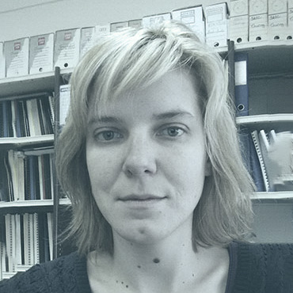
            </div> -->
        </header>


            <section id="sectied in developing your quantitative hydrogeology/hydrology abilitieson1">
                <h2 class="intro_param">Hydrogeologist at Mines Paris, PSL</h2>
                <div class="socials_block">
                    <a href="https://www.linkedin.com/in/agnes-riviere-48676363/"></a>
                    <a href="https://www.researchgate.net/profile/Agnes-Riviere"></a>
                    <a href="https://scholar.google.fr/citations?user=jmWmIW4AAAAJ"></a>
                </div>

             <p>My research areas are physical hydrology and hydrogeology. I investigate how hydrologic systems respond to environmental change and the interactions between aquifers and surface water bodies. Most research projects include a combination of field work and mathematical modeling.</p>
                <div class="figure_center" >
                    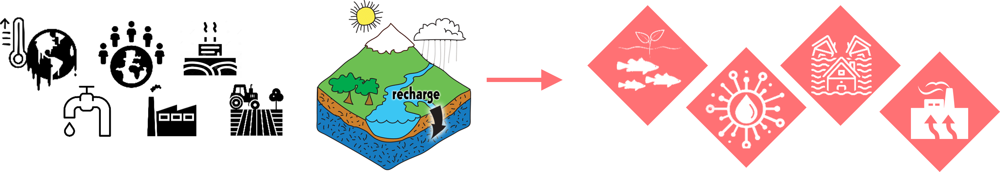
                </div>


                    <h3>Publications and Communications:</h3>

                        <p> <strong> Peer-Reviewed Journals: </strong> Published: 22, Accepted: 1 , Submitted/Under Revision: 1,  In Preparation: 3 </p>
                        <p> <strong> International Conferences:</strong> Oral Presentations: 24, Posters: 19
                        <p> <strong> National Conferences:</strong> Presentations: 31
                <h3>Responsibilities:</h3>

                <p><strong>2019 - Present: </strong> Scientific committee of <a href="https://rgf.brgm.fr/" > RGF</a> </p>
                <p><strong>2022-Present: </strong> coordination of the WP2 of <a href="https://www.ozcar-ri.org/fr/accueil/" > OZCAR </a>(Jean Marçais, INRAE, Lyon) </p>
                <p><strong>2015-Present: </strong>  member of the <a href="https://www.piren-seine.fr/" >PIREN-Seine </a> CODIR </p>


                <h3>  Formation  </h3>
                <p> PhD in Hydrology and hydrogeology Quantitative, University of Pierre et Marie Curie, (Paris VI), France, (now Sorbonne Université, Paris, France) </p>
                <p> Master in Hydrology and Hydrogeology. University Pierre et Marie Curie, (Paris VI), France </p>


                <h3>Research Interests  </h3>

      <h4> <strong> Monitor, model and predict the critical zone under the global change (climatic ad societal) with hydrogeophyscis approaches and collaboration with the stakeholders</strong> </h4>


                <p>"The Critical Zone is defined by National Research Council as the “surface and near-surface environment that sustains nearly all terrestrial life” and is highlighted in the report as a research focus of particular urgency, given the rapidly expanding needs of society."
                    <a href="https://agupubs.onlinelibrary.wiley.com/doi/full/10.1029/2007RG000242">Knight et al., 2010</a> </p>
                <p>" The critical zone (CZ) includes natural and anthropogenic environments, where life, energy and matter cycles combine in complex interactions in time and space."
                    <a href="https://www-sciencedirect-com.minesparis-psl.idm.oclc.org/science/article/pii/S0022169423001907">Arora et al., 2023</a> </p>


                <h4> <strong>Study Areas:</strong> </h4>
                    <ul>
                        <li>Hydrological and Hydrogeological Impacts of Permafrost Dynamics</li>
                        <ul>
                            <li>Hydrodynamic and Transport Properties of Aquifers</li>
                            <li>Numerical and Experimental Approaches to Permafrost Dynamics <a href="https://www.sciencedirect.com/science/article/abs/pii/S0165232X18300715?via%3Dihub"> ⟨10.1016/j.coldregions.2018.11.005⟩ </a></li>
                            <li>Interactions with Groundwater and Surface Water</li>
                            <li>From Local Scale to Sedimentary Basin; from Glacial-Interglacial Cycle to Current Warming</li>
                        </ul>
                        <li>Groundwater-River Interactions and Unsaturated Zone:</li>
                        <ul>
                            <li>Connection-Disconnection States <a href="https://www.sciencedirect.com/science/article/pii/S0022169414004041"> ⟨10.1016/j.jhydrol.2014.05.040⟩ </a>.</li>
                            <li>Flow Induced by Pumping in a Stream-Aquifer System  <a href=" https://www.mdpi.com/2073-4441/14/7/1100"> ⟨10.3390/w14071100⟩ </a></li>
                            <li>Thermal Regime      <a href="https://doi.org/10.1007/s10040-020-02154-6"> ⟨10.1007/s10040-020-02154-6⟩ </a> </li>
                            <li>Scale Change: from Local to Regional Scale <a href="https://doi.org/10.26047/PIREN.rapp.ann.2019.vol5"> ⟨PIREN2019k⟩ </a> </li>
                        </ul>
                        <li>Hydrosystems Facing Global Changes (Climate and Societal):</li>
                        <ul>
                            <li> Hydrodynamic Properties of Aquifers from  well water response to Earth tides <a href="https://egusphere.copernicus.org/preprints/2023/egusphere-2023-1727/"> ⟨10.5194/egusphere-2023-1727⟩</a> </li>
                            <li>Groundwater flooding : Study on Groundwater Rise in Paris and the Inner Suburbs during Seine and Marne Flooding event :  <a href="http://www.theses.fr/2019PSLEM057"> ⟨PAPI_EPTB⟩</a> </li>
                            <li>Water and Heat Fluxes from Atmosphere to Aquifers in the Seine Basin:  <a href="https://www.theses.fr/272277355"> ⟨HEAT_hydrosystem⟩</a>  </li>
                            <li> Anthropic Usages: Geothermal Applications, Cooling Systems, Water Pumping </li>
                        </ul>
                        <li> Exploitation of Seismic Monitoring of Subsurface in Railway Environment:   <a href="https://www.metis.upmc.fr/fr/node/753"> ⟨SNCF_SU⟩</a></li>
                        <li>Thermal studies of a cable buried in a marine dune field:           <a href="https://www.france-energies-marines.org/en/projects/modulles/"> ⟨Modulles_FEM⟩</a>  </li>
                                  </ul>
                <h4> <strong>Methodology:</strong> </h4>

                        <p> <strong> Coupling and Development of Experimental Methods and Numerical Tools </strong></p>
                        <p> <strong>Dialectic between Hydrogeophysical Measurements, Physical Process Characterization, and Modeling </strong></p>
                        <p> <strong>Characterization of Porous Media:  </strong>  Hydrodynamic, Thermal and geomechanical Parameters, Unsaturated Zone</p>
                        <p> <strong>Coupling of Physical Processes: </strong>   Water, Mass, and Energy Fluxes</p>
                        <p> <strong>Observatories :  </strong> Orgeval Critical zone (long-term and high frequency of water level and temperature) </p>
                        <p> <strong>Stakeholders collaborations :  </strong> PIREN Seine program  </p>

<div class="figure_center">
    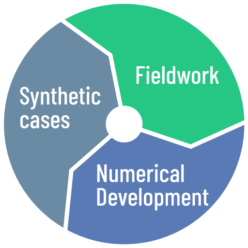

    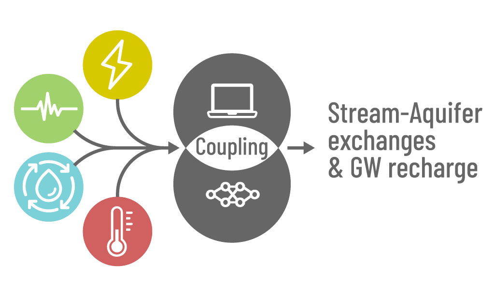


                    <p> Figure 1: From phenological studies to numerical modelling </p>
</div>

                <h3> Teaching Experience (14 Years) </h3>
                <p> 3 years as Teaching Assistant (64 hours per year), 1 year as Temporary Lecturer (192 hours per year), 3 years as Tenure-Track Faculty (100-190 hours per year), and 2 years as Researcher-Teacher (150-200 hours per year). </p>


                <div class="figure_center">
                    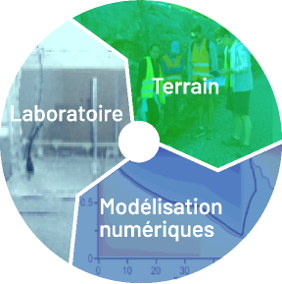
                    <p>Figure: Teaching </p>
                </div>
                <h4> Topics </h4>
                <p>Hydrogeology and Hydrology quantitative, Transport of Solutes and Heat (Geothermal), Basics of hydrogeology and applied geology</p>
                <p>Environmental Studies, Signal treatment, Data analysis,</p>
                <p>Numerical programming, data processing and modeling in geosciences, </p>
                <p> <a  href="https://www.linkedin.com/posts/minesparis_parolesdetudiants-molonari-activity-7140626410133426176-pPhH/?originalSubdomain=fr"> Engineering Project </a> : Development of local Monitoring Ecosystem of Groundwater-River exchanges, </p>
                <p> Field works in Structural and Sedimentary Geology, in Hydrology and Hydrogeology</p>

                <h4> <strong>Supervision Experience:</strong> </h4>
                <p> Postdoctoral Researchers : 4, Ph.D. Theses : 7, Master's Theses (M2) : 13, Bachelor's Theses (L3): 1 and  Undergraduate Projects (L1): 1 </p>


                <h4>
                    <strong> Administrative Roles </strong> </h4>
                <p> <strong> 2020-Present: </strong> Coordinator for the numerical Applications in Geosciences, 4th year at <a href="https://www.polytech.sorbonne-universite.fr/formations/sciences-de-la-terre"> Polytech' Sorbonne Engineering school </a> (Sorbonne University, Paris , France )</p>
                <p> <strong>2019-Present: </strong>Coordinator for the Numerical modelling of water ressources  Module of the <a href="https://psl.eu/en/education/masters-degree-planetary-science">master's degree in Earth and planetary science, environment</a>, ENS, <a href="https://psl.eu/"> Paris Sciences & Lettres (PSL) </a></p>
                <p> <strong>2016-2019: </strong>Coordinator for the Environmental Module of the <a href="https://collegedoctoral.psl.eu/actualites/2017/09/19/le-programme-psl-iti/"> PSL-ITI </a>Mastere's Program (PSL University, Paris, France) </p>
                <p> <strong>2014-Present: </strong>Coordinator for the Quantitative Hydrogeology Module, 5th year at <a href="https://www.polytech.sorbonne-universite.fr/formations/sciences-de-la-terre"> Polytech' Sorbonne Engineering school </a> (Sorbonne University, Paris, France)</p>
                <p> <strong>2011-2012: </strong>Coordinator for the Field Internship in Hydrology (Seine and Aube) and the  Hydrology-Hydrogeology Module of  <a href="https://hhge.metis.upmc.fr/"> Master 1 SDUEE HHGE  </a> (Sorbonne University, Paris, France) </p>

            </section>

            <section id="section2">
                <h2>News & Events</h2>
            <h4>conferences</h4>
            <h5>Join us at EGU 2024 in Vienna (Austria) from 14 to 19 April!</h5>
            <a href="https://meetingorganizer.copernicus.org/EGU24/session/48396" > <div style="text-align: center;">
                 </div> </a>
            <p> Observing and understanding current and past subsurface water and energy transfers in a changing environment
                Proposée par Victor Bense, Agnès Rivière, Wei-Li Hong, Anne Jost, Susanne A. Benz & Ariel Thomas
                #groundwater #critical_zone #observatories </p>

            <h5>Join us at JMSC 2024 in Strasbourg (France) from 19 to 24 June!</h5>
            <a href="https://jmsc2024.sciencesconf.org/" >  <div style="text-align: center;">
                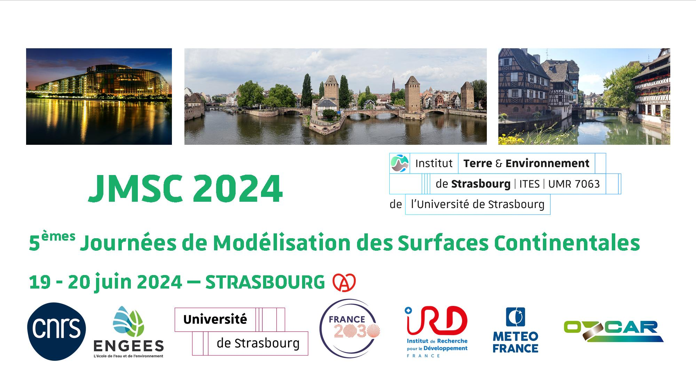  </div>   </a>

            <h4>Master thesis/ PhD / Post-Doc offers</h4>
            <p> If you are looking for a postdoc, PhD or graduate student position, and are passionate about water resources issues, enjoy working outside, and are interested in developing your quantitative hydrogeology/hydrology abilities, please contact me directly.</p>
            <ul>
                <li> Postdoc position in numerical programming <a href="https://cloud.minesparis.psl.eu/index.php/s/dBIqtqg3SM8aMJU"> PostDoc position in numerical programing </a> </li>

                <li> PhD position in hydrogeophysics <a href="https://cloud.minesparis.psl.eu/index.php/s/HPLsQ13E2RiRnw5"> PhD Position in Hydrogeophysics </a>  </li>
            </ul>
            </section>

                <section id="section3">
                <h2>Research Projects</h2>
                <ol reversed>
                    <li> <h5> <a href="https://agirpourlatransition.ademe.fr/entreprises/aides-financieres/20231003/transition-ecologique-valorisation-economique-cpier-vallee-seine">AquaThermie</a> </h5>(2024-206) - Groundwater temperature and thermal usages observatory. Coordination : Agnès Rivière, partner : BRGM and Sorbonne University. Cet appel à manifestation d'intérêt (AMI) vise à apporter un soutien financier à des projets de transition écologique sur les territoires de l'Île de France et de la Normandie, dans le cadre du Contrat de Plan Interrégional État-Régions (CPIER) pour la Vallée de la Seine.</li>
                    <li>  <h5> <a href="https://agnes-riviere.github.io/GWSBound/"> GWSBound </a> </h5> (2024-2028) - GW fluxes across Subsurface BOUNDaries forecasting by combined
                        hydrogeophysics data and model. Coordination: Agnès Rivière, ANR JCJC </li>
                    <li>  <h5> Scouth </h5> (2023-2026) - Régime thermique de la Sauer impact des aménagements anthropiques (2024-2027). Coordination Paul
                        Bois (ENGESS, Strasbourg) and Agnès Rivière (Mines Paris -PSL), OFB</li>
                    <li> <h5> MODULLES  </h5> (2021-2024) - Modélisation de dunes sous-marines : évolutions locales et à grande échelle
                        dans un contexte éolien offshore. Coordination France Energie Marine (Brest), PIA4</li>
                    <li>  <h5> Projet de thèse SNCF Réseau/Sorbonne Université/MINES Paris  </h5>  (2022-2024) - Exploitation du
                        monitoring sismique du sous-sol en milieu ferroviaire. Coordination Ludovic
                        Bodet (Sorbonne Université), SNCF</li>
                    <li> <h5> QUAE </h5>  (2021-2022)  - QUAntification et cartographie des Echanges nappe-rivière en Seine Normandie.
                        Agence de l'eau Seine Normandie. Coordination Zahra Thomas (AGROCAMPUS OUEST), Agence de l'eau Seine Normandie</li>
                    <li> <h5> PIREN-Seine Phase VIII </h5> (2020-2024) - Axe 2 Extrêmes climatiques. Phase 8. Coordination Agnès
                        Rivière, (MINES Paris - PSL) et Vincent Thieu (METIS, SU), Projet multi-partenaires</li>
                    <li> <h5> Projet LEARN </h5> (2019-2022) - Impact de l’arasement des barrages sur les fLux hyporhéiquEs et
                        les échanges nAppe Rivière de la SéluNe. Agence de l’eau et AFB. Coordination
                        Alain Crave (Géosciences Rennes),</li>
                    <li>  <h5> AquiVar </h5> (2018-2020) - Rôle des caractéristiques physiques des aquifères dans la
                        déformation du signal climatique enregistré dans les fluctuations
                        piézométriques des aquifères dans le bassin de Paris. Coordination Nicolas
                        Massei (M2C, Rouen) et Nicolas Flipo (MINES ParisTech). Agence de l’eau Seine
                        Normandie<</li>
                    <li> <h5> HOT-FLUXES </h5>  (2018-2019) - Mesures distribuées des flux pour la caractérisation des
                        échanges nappe-rivière. Coordination Olivier Bour (Géosciences Rennes).
                        EC2CO</li>
                    <li> <h5>  CONSACRE </h5> (2018-2020) - CONtinuite écologique de la Seine et intérêt des ACteurs pour
                        sa Restauration. Coordination Céline Le Pichon (INRAE, Anthony). GIP
                        Seine-Aval. Agence de l'eau Seine Normandie </li>
                    <li> <h5> CYRAENEAU </h5>  (2017-2018) - CYcle tRAnsport ENergie EAU. Coordination Agnès Rivière (MINES
                        ParisTech). PSL ingénierie.</li>
                    <li> <h5>  Remontées des nappes  </h5> Action 1.1.5 du PAPI de la Seine et de la Marne francilienne, Coordination EPTB Seine Grands Lacs</li>
                    <li> <h5> SPAWET </h5> (2016-2019) - Space altimetry for water and energy transfers modeling. Coordination Catherine Ottlé (LSCE). CNES.</li>
                    <li> <h5> Courbe de gel </h5> (2016) - Détermination de la courbe de gel d'un sable de Nemours : interprétation de mesures du
                        contenu en eau liquide d'un sol gelé obtenues par TDR. Coordination:
                        Anne Jost (Sorbonne Université), Fayçal Réjiba (M2C), Agnès Rivière (MINES
                        ParisTech). - Fédération Ile de France de Recherche en Environnement.</li>

                    <li> <h5> Projet VNF </h5> Projet de mise à grand gabarit de la liaison fluviale entre Bray sur Seine et Nogent
                        sur Seine (2015-2017) - sous -traitants de SAFEGE pour Voie Navigable de France</li>

                    <li> <h5>PIREN-Seine Phase VII </h5> (2015-2019) - Axe 2 : Fonctionnement des corridors hydro-écologiques du
                    bassin de la Seine pour l'évaluation des aménagements et restaurations. Coordination
                        Agnès Rivière (MINES ParisTech) et Alexandre Gélabert (IPGP), Projet  multi-partenaires </li>
                    <li> <h5> INTERFROST  </h5> (2014-2019) - Intercomparison project for
                    thermo-hydro coupled heat and water transfers in permafrost regions.
                    Coordination : Christophe Grenier (LSCE).  </li>
                    <li> <h5> Scotty Creek </h5> (2010-2013)  Understanding and prediction of permafrost thaw impacts on northern ecosystems and water resources. Coordination : Quinton William,   Subventions de projets stratégiques du Conseil de recherches en sciences
                        naturelles et en génie du Canada  </li>
                    <li> <h5> Permafrost</h5> Caractérisation
                        numérique et physique de la dynamique du pergélisol et de ses impacts
                        hydrogéologiques. Programme Ecosphère continentale et côtière (2010-2011)
                        Coordination : Anne Jost (Sorbonne Université), EC2CO</li>
                </ol>


            </section>
            <section id="section4">
                <h2>Publications</h2>
                <p> N.B.: The first authors in bold are students whom I supervised. </p>
                <ol reversed>
                <li> <b> Cunha-Teixeira, J.</b>, Ludovic, B., Dangeard, M., Gesret, A., Hallier, A., Rivière, A., Burzawa, A., Cárdenas Chapellín, J. J., Fonda, M.,
  Sanchez Gonzalez, R., Dhemaied, A., Boisson Gaboriau, J., (submitted in  2023) - Passive measurement of multi-modal surface-wave dispersion along
  high-speed lines using uniform linear arrays, Seismica. </li>
                <li>Valois, R., Rivière, A., Vouillamoz, J-M. and Rau G. (2024) - Analytical Solution for Well Water
                    Response to Earth Tides in Leaky Aquifers with Storage and Compressibility in
                    the Aquitard, HESS
                    <a href="https://egusphere.copernicus.org/preprints/2023/egusphere-2023-1727/"> ⟨10.5194/egusphere-2023-1727⟩</a> </li>
                <li> Ackerer, J., Kuppel, S., Braud, I., Pasquet, S., Fovet, O. Probst, A., Pierret, M-C., Ruiz, L., Tallec, T., Lesparre, N.,
                    Weill, S., Flechard, S., Probst, J. L., Marçais, J., Riviere, A., Habets, F., Anquetin, A., and J. Gaillardet (2023)
                    – Exploring the Critical Zone Heterogeneity and the Hydrological Diversity Using an Integrated Ecohydrological Model in
                    Three Contrasted Long-Term Observatories, Water Resources Research, <a
                            href="https://agupubs.onlinelibrary.wiley.com/doi/10.1029/2023WR035672"> ⟨10.1029/2023WR035672⟩ </a> </li>
                <li> Bois, P., Beisel, J.N., Cairault, A., Flipo, N., Leprince, C. and Rivière, A. , (2023) – Water temperature dynamics in a headwater forest stream: contrasting climatic, anthropic and geological conditions create thermal mosaic of aquatic habitats, PLOS one
                    <a href="https://doi.org/10.1371/journal.pone.0281096"> ⟨10.1371/journal.pone.0281096⟩ </a>
                </li>
                <li> BA Mouhamadoul, M., Crave, A., Heyman, J., Rivière A., Oliver-Soulayrol Marc, Kergosien Bruno; Rolland Pascal; Petton, C., Lavenant, N., Kermarrec, J.J., Meric, F., Stube, V. (2023) – A dataset on physico-chemical hyporheic variables in the Selune River: Towards understanding the impact of dam removal on riverbed clogging processes, Data in brief
                    <a href=" https://doi.org/10.1016/j.dib.2022.108837"> ⟨10.1016/j.dib.2022.108837⟩ </a></li>
                <li> <b> Kiliç, D. </b>, Rvière , A., Gallois, N., Ducharne, A., Wang. S., Peylin, P.,  and Flipo, N., (2023) – Assessing water and energy fluxes in a regional hydrosystem: case study of the Seine basin. Comptes Rendus. Géoscience
                 <a href=" https://doi.org/10.5802/crgeos.165"> ⟨10.5802/crgeos.165⟩ </a>
                </li>
                <li> Texier, J., Gonçalvès, J. and Rivière, A. (2022) – Numerical Assessment of Groundwater Flowpaths below a Streambed in Alluvial Plains Impacted by a Pumping Field. Water 14(7):1100
                    <a href=" https://www.mdpi.com/2073-4441/14/7/1100"> ⟨10.3390/w14071100⟩ </a>
                </li>
                <li> <b> Cucchi, K. </b>, Flipo, N., Rivière, A., and Rubin, Y. (2021) – Estimating hydrothermal properties and high-frequency fluxes from multiphysics measurements in the hyporheic zone. Frontiers in Water,
                    <a href="https://doi.org/10.3389/frwa.2021.700274"> ⟨10.3389/frwa.2021.700274⟩ </a>
                </li>
                <li> <b> Dangeard, M. </b>, Rivière, A., Bodet, L., Schneider, S, Guérin, R., Jougnot, D., and Maineult, A, (2021) – River Corridor Model Constrained by Time-Lapse Seismic Acquisition., Water Resources Research,
                <a href="https://doi.org/10.1029/2020WR028911 "> ⟨10.1029/2020WR028911⟩</a>
                </li>
                    <li> Ottle, C., Bernus, A., Verbeke, T., Petrus, K., Yin, Z. Biancamaria, S., Jost, A., Desroches, D., Pottier, C., Perrin, C., de Lavenne, A., Flipo, N., Rivière, A., (2021) – Characterization of SWOT Water Level Errors on Seine Reservoirs and La Bassée Gravel Pits: Impacts on Water Surface Energy Budget Modeling. Remote Sensing, MDPI, 2020, 12 (18), pp.2911.
                        <a href="https://www.mdpi.com/2072-4292/12/18/2911"> ⟨10.3390/RS12182911⟩ </a>.
                    </li>
                    <li>  Rivière, A., Flipo, N., Goblet, P., and Berrhouma, A., (2020) – Thermal reactivity at the stream–aquifer interface. Hydrogeology Journal.
                        <a href="https://doi.org/10.1007/s10040-020-02154-6"> ⟨10.1007/s10040-020-02154-6⟩ </a>.
                    </li>
                    <li><strong>Maillot, M.</strong>, Flipo, N., Rivière, A., Desassis, N., Renard, D., Goblet, P. and Vincent, M., (2019) – Technical note: Water table mapping accounting for river-aquifer connectivity and human pressure., Hydrology and Earth System Sciences Discussions, 23 (11).
                        <a href="https://www.hydrol-earth-syst-sci.net/23/4835/2019/hess-23-4835-2019.html"> ⟨10.5194/hess-23-4835-2019⟩ </a>.
                    </li>
                    <li> Belles, A. Alary, C., Rivière, A. Guillon, S., Patault, E., Flipo, N. and Franke, C. (2019) – Transfer Pathways and Fluxes of Water-Soluble Pesticides in Various Compartments of the Agricultural Catchment of the Canche River (Northern France). Water, 11 (7), pp.1428.
                        <a href="https://www.mdpi.com/2073-4441/11/7/1428">⟨10.3390/w11071428⟩ </a>.
                    </li>
                    <li><strong>Schuite, J.</strong>, Flipo, N., Massei, N., Rivière, A. and Baratelli, F. (2019) – Improving the Spectral Analysis of Hydrological Signals to Efficiently Constrain Watershed Properties. Water Resources Research, 55, 4043– 4065.
                        <a href="https://agupubs.onlinelibrary.wiley.com/doi/abs/10.1029/2018WR024579">⟨10.1029/2018WR024579⟩ </a>.
                    </li>
                    <li> Rivière, A., Jost, A., Gonçalvès, J., and Font, M. (2019) – Experimental and numerical studies of pore-water pressure variations in sub-permafrost groundwater. Cold Regions Science and Technology, 158, 76-94.
                        <a href="https://www.sciencedirect.com/science/article/abs/pii/S0165232X18300715?via%3Dihub"> ⟨10.1016/j.coldregions.2018.11.005⟩ </a>.
                    </li>
                    <li>Baratelli, F., Flipo, N., Rivière, A. and Biancamaria, S. (2018) – Retrieving river baseflow from SWOT spaceborne mission. Remote Sensing of Environment, Elsevier, 542, 686-703.
                        <a href="https://www.sciencedirect.com/science/article/pii/S0022169416306072?via%3Dihub"> ⟨10.1002/2016GL071577⟩ </a>.
                    </li>
                    <li><strong>Cucchi, K.</strong>, Rivière, A., Flipo, N., A. Baudin, A. Berrhouma, F. Rejiba and Rubin, Y. (2018) – MOLONARI-mini: a coupled pressure and temperature system for local estimations of water and heat exchanges and sediment properties in streambeds. Journal of hydrology, 561, 1037-104.
                        <a href="https://www.sciencedirect.com/science/article/pii/S0022169417307503?via%3Dihub"> ⟨10.1016/j.jhydrol.2017.10.074⟩ </a>.
                    </li>
                    <li>Grenier, C., Anbergen, H., Bense, V., Chanzy, Q., Coon, E., Collier, N., Costard, F., Ferry, M., Frampton, A., Frederick, J., Gonçalvès, J., Holmén, J., Jost, A., Kokh, S., Kurylyk, B., McKenzie, J., Molson, J., Mouche, E., Orgogozo, L., Pannetier, R., Rivière, A., Roux, N., Rühaak, W., Scheidegger, J., Selroos, J.-O., Therrien, R., Vidstrand, P. and C. Voss (2018) – Groundwater flow and heat transport for systems undergoing freeze-thaw: Intercomparison of numerical simulators for 2D test cases. Advances in Water Resources, 114, 196-218.
                        <a href="https://www.sciencedirect.com/science/article/abs/pii/S0309170817307510"> ⟨10.1016/j.advwatres.2018.02.001⟩ </a>
                    </li>
                    <li>Gaillardet, J., Braud, I., Hankard, F., Anquetin, S., Bour, O., Dorfliger, N., de Dreuzy, J., Galle, S., Galy, C., Gogo, S., Gourcy, L., Habets, F., Laggoun, F., Longuevergne, L., Borgne, T. L., Naaim Bouvet, F., Nord, G., Simonneaux, V., Six, D., Tallec, T., Valentin, C., Abril, G., Allemand, P., Arènes, A., Arfib, B., Arnaud, L., Arnaud, N., Arnaud, P., Audry, S., Comte, V. B., Batiot, C., Battais, A., Bellot, H., Bernard, E., Bertrand, C., Bessière, H., Binet, S., Bodin, J., Bodin, X., Boithias, L., Bouchez, J., Boudevillain, B., Moussa, I. B., Branger, F., Braun, J. J., Brunet, P., Caceres, B., Calmels, D., Cappelaere, B., Celle-Jeanton, H., Chabaux, F., Chalikakis, K., Champollion, C., Copard, Y., Cotel, C., Davy, P., Deline, P., Delrieu, G., Demarty, J., Dessert, C., Dumont, M., Emblanch, C., Ezzahar, J., Estèves, M., Favier, V., Faucheux, M., Filizola, N., Flammarion, P., Floury, P., Fovet, O., Fournier, M., Francez, A. J., Gandois, L., Gascuel, C., Gayer, E., Genthon, C., Gérard, M. F., Gilbert, D., Gouttevin, I., Grippa, M., Gruau, G., Jardani, A., Jeanneau, L., Join, J. L., Jourde, H., Karbou, F., Labat, D., Lagadeuc, Y., Lajeunesse, E., Lastennet, R., Lavado, W., Lawin, E., Lebel, T., Bouteiller, C. L., Legout, C., Lejeune, Y., Meur, E. L., Moigne, N. L., Lions, J., Lucas, A., Malet, J. P., Marais-Sicre, C., Maréchal, J. C., Marlin, C., Martin, P., Martins, J., Martinez, J. M., Massei, N., Mauclerc, A., Mazzilli, N., Molénat, J., Moreira-Turcq, P., Mougin, E., Morin, S., Ngoupayou, J. N., Panthou, G., Peugeot, C., Picard, G., Pierret, M. C., Porel, G., Probst, A., Probst, J. L., Rabatel, A., Raclot, D., Ravanel, L., Rejiba, F., René, P., Ribolzi, O., Riotte, J., Rivière, A., Robain, H., Ruiz, L., Sanchez-Perez, J. M., Santini, W., Sauvage, S., Schoeneich, P., Seidel, J. L., Sekhar, M., Sengtaheuanghoung, O., Silvera, N., Steinmann, M., Soruco, A., Tallec, G., Thibert, E., Lao, D. V., Vincent, C., Viville, D., Wagnon, P., and Zitouna, R. (2018). – Ozcar : the French network of critical zone observatories. Vadose Zone Journal, 17(1).
                        <a href="https://dl.sciencesocieties.org/publications/vzj/abstracts/17/1/180067"> ⟨10.2136/vzj2018.04.0067⟩ </a>.
                    </li>
                    <li>Flipo, N., Mouhri, A., Labarthe, B., Biancamaria, S., Rivière, A. and Weill, P. (2014) – Continental Hydrosystem Modelling: the concept of nested stream-aquifer interfaces., Hydrology and Earth System Sciences, 18, 3121–3149.
                        <a href="https://www.hydrol-earth-syst-sci.net/18/3121/2014/"> ⟨10.5194/hess-18-3121-2014⟩ </a>.
                    </li>
                    <li>Rivière, A., Gonçalvès, J., Jost, A. and Font, M. (2014) – Experimental and numerical assessment of stream-aquifer exchanges during disconnection. Journal of Hydrology, 517, 574-583.
                        <a href="https://www.sciencedirect.com/science/article/pii/S0022169414004041"> ⟨10.1016/j.jhydrol.2014.05.040⟩ </a>.
                    </li>
                    <li>Courbet, C., Rivière, A., Jeannotat, S., Rinaldi, S., Hunkeler, D., Bendjoudi, H. and de Marsily , G. (2011) – Complementing approaches to demonstrate chlorinated solvent biodegradation in a complex pollution plume: mass balance, PCR, and compound-specific stable isotope analysis. Journal of Contaminant Hydrology, 126(3-4), 315-329.
                        <a href="https://www.sciencedirect.com/science/article/pii/S016977221100091X?via%3Dihub"> ⟨10.1016/j.jconhyd.2011.08.009⟩ </a>.
                    </li>
                </ol>
                <h2>Reports</h2>
                <p> N.B.: The first authors in bold are students whom I supervised. </p>
                <ol reversed>
                    <li>	Rivière, A., (2023) Transferts de chaleur et températures des eaux du bassin de la Seine	<a href="https://piren-seine.fr/rapports/rapport_de_synthese/rapports_de_phase_8/transferts_de_chaleur_et_temperatures_des_eaux_du"> ⟨PIREN2023e⟩ </a>.</li>
                    <li>	Rivière. A, Thomas. W., Ung. P., (2023) - Évolution des températures de la Seine jusqu’en 2022. Dans Rivière. A. (ed), Transferts de chaleur et températures des eaux, PIREN-Seine, Rapport de synthèse phase VIII, Volume 4, pp. 7-43	<a href="https://piren-seine.fr/rapports/rapport_de_synthese/rapports_de_phase_8/transferts_de_chaleur_et_temperatures_des_eaux_du"> ⟨PiREN2023d⟩ </a>.</li>
                    <li>	Rivière. A, Ladet. D., Thomas. W, Le Breton, G, Ducharne. A., Oudin. L., (2023) – Projections des températures de l'eau de la Seine à Paris à l'horizon 2100. Dans Rivière. A. (ed), Transferts de chaleur et températures des eaux, PIREN-Seine, Rapport de synthèse phase VIII, Volume 4, 2023, pp. 97-120	<a href="https://piren-seine.fr/rapports/rapport_de_synthese/rapports_de_phase_8/transferts_de_chaleur_et_temperatures_des_eaux_du"> ⟨PIREN2023c⟩ </a>.</li>
                    <li>	Baratelli, F., Parlanti, E., Garnier, J., Guillon, S., Jost, A., Rivière, A., Sourzac, M., Mercier, B., Martinez, A., Nespoulet, R., Eschbach, D., Varrault, G., Mouchel, J.-M., Flipo, N. (2023) – Connectivité et réactivité de l’interface nappe-rivière dans la plaine alluviale de la Bassée. Dans Carré, C., Lestel, L., et Flipo, N. (eds), Interdisciplinarité en Bassée-Voulzie, PIREN-Seine, Rapport de synthèse phase VIII, Volume 7, pp. 29-53	<a href="https://piren-seine.fr/sites/default/files/piren_documents/rapports_de_phase_8/rapport_piren_ph8_vol07_interdiscipilarite_bassee_2.pdf"> ⟨PIREN2023b⟩ </a>.</li>
                    <li>	Guillon, S., Mouchel, J.-M., Garnier, J., Bouchez, J., Matthews, M., Derry, Lou, Rivière, A., De Lavenne, A., Blanchouin, A., Gaillardet, J., Hénine, H. (2023) – Comprendre et quantifier les flux de carbone dans le bassin versant des Avenelles : un bilan des suivis biogéochimiques. Dans Flipo, N. (ed), Métabolisme des eaux du bassin de la Seine au regard de la matière organique, PIREN-Seine, Rapport de synthèse phase VIII, Volume 5,  pp. 91-122	<a href="https://piren-seine.fr/sites/default/files/piren_documents/rapports_de_phase_8/rapport_piren_ph8_vol05_metabolisme_1112_compresse.pdf"> ⟨PIREN2023a⟩ </a>	</li>
                    <li>	<b>Morvan. A.</b>, Rivière A. and  Maison, Antoine (2023) – A state-of-the-art about thermal effects of a cable buried in a field of underwater dunes, livrable MODULLES 1, 65p					</li>
                    <li>	Rivière, A., Kiliç, D., Gallois, N., Ducharne, A., Wang. S., Peylin, P., and Flipo, N., (2022) – Simulations des flux d'eau et de chaleur au sein de l'hydrosystème Seine, Rapports d’activité, PIREN-Seine	<a href="https://www.piren-seine.fr/sites/default/files/piren_documents/rapports_dactivite_2022/piren_rapport_riviereetal_2022.pdf"> ⟨PIREN2022⟩ </a>.</li>
                    <li>	Gallois, N., Maillot, M., Rivière, A., Flipo, N. and Raguénès Y. (2022) – Constitution d’un jeu de données dynamiques de référence caractérisant des scénarios de remontées de nappe dans l’agglomération parisienne - Action 1.1.5 du PAPI de la Seine et de la Marne francilienne : Simulation de scénarios de remontées de nappe dans un contexte de crue centennale, Research Report, EPTB Seine Grands-Lacs. 2022, pp.78.					</li>
                    <li>	Baratelli, F., Parlanti, E., Flipo, N., Garnier, J., Guillon, S., Jost, A., Rivière, A., Sourzac, M., Mercier, B. and Martinez, A., (2021) –   Campagnes de prélèvements multi-traceurs pour la caractérisation hydro-biogéochimique de la plaine alluviale de la Bassée, Rapports d’activité, PIREN-Seine	<a href="https://doi.org/10.26047/PIREN.rapp.ann.2021.vol04"> ⟨PIREN2021d⟩ </a>.</li>
                    <li>	Leger, E., Faycal Rejiba, Rivière, A., Fauchard, C., Flipo, N., Finco, C., Schamper, C., Antoine, R and Levaillant R. (2021) – Imagerie thermique et changement d'échelle sur la Bassée : développements méthodologiques, Rapports d’activité, PIREN-Seine	<a href="https://doi.org/10.26047/PIREN.rapp.ann.2021.vol18"> ⟨PIREN2021c⟩ </a>.</li>
                    <li>	Rivière, A., Thomas, W., Ladet, D., Le Breton, G., Ducharne, A., and Oudin, L. (2021) – Modélisation de la température de la Seine à Paris à l’horizon 2100, Rapports d’activité, PIREN-Seine	<a href="https://doi.org/10.26047/PIREN.rapp.ann.2021.vol27"> ⟨PIREN2021b⟩ </a>.</li>
                    <li>	<b>  Kiliç, D.</b>, Rvière, A., Gallois, N., Wang. S., and Flipo, N., (2021) – Développement du transport de chaleur au sein de la plateforme de modélisation des hydrosystèmes CaWaQS, Rapports d’activité, PIREN-Seine	<a href="https://doi.org/10.26047/PIREN.rapp.ann.2021.vol09"> ⟨PIREN2021a⟩ </a>.</li>
                    <li>	<b>  Maillot, M.</b>, Rivière, A., Flipo, N. and Vincent, M. (2020) – Étude du risque inondation par remontées de nappe en agglomération parisienne, Rapports d’activité, PIREN-Seine	<a href="https://doi.org/10.26047/PIREN.rapp.ann.2020.vol20"> ⟨PIREN2020c⟩ </a>.</li>
                    <li>	Rejiba, F., Fauchard, C., Raphaël, A., Finco, C., Schamper, C., Levaillant, R., Rivière, A. and Flipo, N. (2020) – Trajectoire thermique à l'échelle de la plaine de la Bassée. Du suivi de la température au sol au suivi thermique par drone, Rapports d’activité, PIREN-Seine	<a href=" https://doi.org/10.26047/PIREN.rapp.ann.2020.vol14 "> ⟨PIREN2020b⟩ </a>.</li>
                    <li>	Gallois, N., Rivière A. and Flipo, N., Développements numériques au sein de la plateforme de modélisation des hydrosystèmes CaWaQS : Introduction des premières fonctionnalités de transport conservatif, Rapports d’activité, PIREN-Seine	<a href="https://doi.org/10.26047/PIREN.rapp.ann.2020.vol14"> ⟨PIREN2020a⟩ </a>.</li>
                    <li>	Flipo, N., Rivière, A., Gallois, N., Labarthe, B., Baratelli, F., Shuaitao, W., Maillot, M., Verbeke, T., Goblet, P., Jost, A. and Abasq, L. (2019) – CAtchement WAter Quality Simulator : CaWaQS, Rapports d’activité, PIREN-Seine	<a href="https://doi.org/10.26047/PIREN.rapp.ann.2019.vol4"> ⟨PIREN2019l⟩ </a>.</li>
                    <li>	Rivière, A. (2019) – Fonctionnements hydrogéophysiques et biogéochimiques des interfaces nappe-rivière : conséquences sur la ressource en eau, Rivière et al. (eds.), Rapports de synthèse de la phase VII du PIREN-Seine, Volume 4, 2019	<a href="https://doi.org/10.26047/PIREN.rapp.ann.2019.vol5"> ⟨PIREN2019k⟩ </a>.</li>
                    <li>	Gallois, N., Rivière, A., Flipo, N., Schuite, J., Cucchi, K., Killiç, D., Baudin, A. Marlot, L., Seraphin, P., Schleifer, J., Ansart, P., Blanchouin, A. and Mouchel, J.-M. (2019) – Stratégie de calibration et modélisation de l’hydrosystème du bassin versant des Avenelles, Rapports d’activité, PIREN-Seine	<a href="https://doi.org/10.26047/PIREN.rapp.ann.2019.vol4"> ⟨PIREN2019j⟩ </a>.</li>
                    <li>	Rivière, A., Flipo, N., Goblet, P., Cucchi, K., Berrhouma, A., Baudin, A., Marlot, L., Seraphin, P., Schleifer, J., Ansart, P., Blanchouin, A. and Mouchel, J.-M. (2019) – Réseau de suivi "MOnitoring LOcal des échanges NAppe Rivière", Rapports d’activité, PIREN-Seine	<a href="https://doi.org/10.26047/PIREN.rapp.ann.2019.vol4"> ⟨PIREN2019i⟩ </a>.</li>
                    <li> <b> 	Cucchi, K.</b>, Rivière, A., Baudin, A., Robin, Y. and Flipo, N. (2019) – Estimation des échanges nappe-rivière locaux et de leur variation le long d’un réseau hydrographique : Développement d’un capteur innovant et application au bassin agricole des Avenelles, Rapports d’activité, PIREN-Seine	<a href="https://doi.org/10.26047/PIREN.rapp.ann.2019.vol4"> ⟨PIREN2019h⟩ </a>.</li>
                    <li>	Mouchel, J.-M., Rocha, S., Rivière, A., and Tallec, G. (2019). – Caractérisation de la géochimie des interfaces nappe-rivière du bassin des Avenelles, Rapports d’activité, PIREN-Seine	<a href="https://doi.org/10.26047/PIREN.rapp.ann.2019.vol4"> ⟨PIREN2019f⟩ </a>.</li>
                    <li>	Jost, A., Wang, S., Picourlat, F., Colleoni, F., Verbeke, T., Labarthe, B., Flipo, N., Gallois, N., Baratelli, F. and Rivière, A. (2019) – Les gravières, fenêtres ouvertes sur la plaine de la Bassée, Rapports d’activité, PIREN-Seine	<a href="https://doi.org/10.26047/PIREN.rapp.ann.2019.vol4"> ⟨PIREN2019e⟩ </a>.</li>
                    <li>	Flipo, N., Parlenti, E., N., Baratelli, F., Rivière, A. Jost, A., Sourzac, M., Mouchel, J.-M., Varrault, G., Guillon, S. and Saad, M. (2019) – Réactivité de la plaine alluviale de la Bassée, Rapports d’activité, PIREN-Seine	<a href="https://doi.org/10.26047/PIREN.rapp.ann.2019.vol4"> ⟨PIREN2019d⟩ </a>. </li>
                    <li>	<b>  Dangeard, M.</b>, Bodet, L., Rivière, A., Schneider, S., Guérin, R., Jougnot, D. and Maineult, A. (2019) – Amélioration de la quantification des échanges nappe-rivière grâce aux "time-lapse" sismiques, Rapports d’activité, PIREN-Seine	<a href="https://doi.org/10.26047/PIREN.rapp.ann.2019.vol4"> ⟨PIREN2019c⟩ </a>.</li>
                    <li>	Rejiba, F., Fauchard, C., Raphaël, A., Finco, C., Schamper, C., Levaillant, R. and Rivière, A. (2019) – Imagerie Infrarouge Thermique par un drone par la caractérisation des hétérogénéités des températures de surface d’un hydrosystème (rivière, surface du sol, gravière), Rapports d’activité, PIREN-Seine	<a href="https://doi.org/10.26047/PIREN.rapp.ann.2019.vol4"> ⟨PIREN2019b⟩ </a>.</li>
                    <li>	Gallois, N., Flipo, N., Schuite, J., Rivière, A., Viennot, P., Baratelli, F., Labarthe, B., Bonnet, R. boé, J. and (2019) – 200 ans d’évolution de la ressource en eau du bassin de la Seine, Rapports d’activité, PIREN-Seine	<a href="https://doi.org/10.26047/PIREN.rapp.ann.2019.vol4"> ⟨PIREN2019a⟩ </a>.</li>
                    <li>	Wang, S., Flipo, N., Rivière, A., Romary, T. (2018) – Mise en place d'une nouvelle version de ProSe : ProSe-P, Rapports d’activité, PIREN-Seine	<a href="https://doi.org/10.26047/PIREN.rapp.ann.2018.vol21"> ⟨PIREN2018c⟩ </a>.</li>
                    <li> <b> Séraphin, P.</b>, Rivière, A., Flipo, N., Kiliç, D., Ducharne, A. and Verbeke, T., (2018) – Comparaison d’un modèle SVAT (Soil-Vegetation-Atmosphere-Transfer) avec un modèle réservoir (type fonction production) pour l’estimation du bilan d’eau de surface du bassin des Avenelles, Rapports d’activité, PIREN-Seine	<a href="https://doi.org/10.26047/PIREN.rapp.ann.2018.vol03"> ⟨PIREN2018b⟩ </a>.</li>
                    <li>	Rivière, A., Flipo, N., Ansart, P., Baudin, A. and Marlot, L. (2018) – Revue des données de température du bassin des Avenelles, Rapports d’activité, PIREN-Seine	<a href="https://doi.org/10.26047/PIREN.rapp.ann.2018.vol27"> ⟨PIREN2018a⟩ </a>.</li>
                    <li>	Baratelli, F., E. Parlanti, G. Varrault, M. Sourzac, J.-M. Mouchel, M. Saad, Jost, A., S. Guillon, Rivière, A. and Flipo, N. (2017) – Caractérisation hydro-géochimique de la plaine de la Bassée en période de crue. Rapport d'activité, PIREN-Seine.	<a href="https://doi.org/10.26047/PIREN.rapp.ann.2017.vol09"> ⟨PIREN2017c⟩ </a>.</li>
                    <li> <b> 	Dangeard. M.</b>, Schneider. S., Bodet, L.,  Rivière, A., Guérin, R. Réjiba, F., and  Hovhannissian., G.  (2017) – Vers une interpolation hydrogéophysique des propriétés hydrodynamiques de la subsurface : apports du « time-lapse » sismique.  Rapport d'activité, PIREN-Seine.	<a href="https://doi.org/10.26047/PIREN.rapp.ann.2017.vol38"> ⟨PIREN2017b⟩ </a>.</li>
                        <li>	Guillon, S., Rivière, A., and Flipo, N. (2017). Premiers retours sur la faisabilité du traçage des écoulements à l’aide des isotopes stables de l’eau et du radon, Rapports d’activité, PIREN-Seine	<a href="https://doi.org/10.26047/PIREN.rapp.ann.2017.vol26"> ⟨PIREN2017a⟩ </a>.</li>
                        <li>	<b> Berrhouma, A.</b>, Rivière, A., Cucchi, K., Goblet, P., and Flipo, N. (2016) – Estimation des flux d’énergie à l’interface nappe-rivière des Avenelles, Rapports d’activité, PIREN-Seine	<a href="https://doi.org/10.26047/PIREN.rapp.ann.2016.vol15"> ⟨PIREN2016d⟩ </a>.</li>
                        <li>	Mouchel, J.-M., Rocha, S., Rivière, A., and Tallec, G. (2016) – Caractérisation de la géochimie des interfaces nappe-rivière du bassin des Avenelles, Rapports d’activité, PIREN-Seine	<a href="https://doi.org/10.26047/PIREN.rapp.ann.2016.vol05"> ⟨PIREN2016c⟩ </a>.</li>
                        <li>	Flipo, N., Labarthe, B., Mouhri, A., Rivière, A., Saleh, F., Weill, P. (2016), Caractérisation et Modélisation des interfaces nappe-rivière. Dans "Interfaces Nappe-Rivière", PIREN Seine, Rapport de synthèse 2011-2015	<a href="https://doi.org/10.26047/PIREN.rapp.ann.2014.vol01"> ⟨PIREN2016b⟩ </a>.</li>
                        <li>	Rivière, A., Mouhri, A., Bodet, L., Ansart, P., Baudin, A., Berrhouma, A., Carrillo, N., Chauris, H., Cocher, E., Cucchi, K., Cuisinier, E., Durand, V., de Fouquet, C., Goblet, P., Hovhannissian, G., Jost, A., Labarthe, B., Martineau, N., Pasquet, S., Rejiba, F., Rubin, Y., Tallec, G., Flipo, N. (2016), Quantifier les échanges nappe-rivière depuis l’échelle locale. Dans "Interfaces Nappe-Rivière", PIREN Seine, Rapport de synthèse 2011-2015	<a href="https://doi.org/10.26047/PIREN.rapp.ann.2014.vol01"> ⟨PIREN2016a⟩ </a>.</li>
                        <li>	Rivière, A., Flipo, N., Bodet, L., Chevalier, A., Cojan, I., Cucchi. K., Deleplancque, B., Gob, F., Goblet, P., Jost, A., Hovhannissian, G., Kissel, C., Lestel, L., Maillot, M., Ors, F., Rejiba, F., Rubin, Y., Schamper, C., Thiesson, J. and Weil P. (2015) – Bloc 1 : Fonctionnement sédimentaire morphologique, hydrologique et thermiques des corridors hydro-écologiques., PIREN-Seine, Fiche 2015					</li>
                        <li>	<b> Cucchi, K.</b>, Rivière, A., Rubin, Y., and Flipo, N. (2015) – Dispositif de suivi des échanges nappe- rivière sur le bassin des Avenelles : de la mesure à la base de données., PIREN-Seine, Fiche 2015					</li>
                        <li>	Rivière, A., Flipo, N., Mouhri, A., Cucchi, K., Berrhouma, A., Labarthe, B., Ansart, P., Baudin, A., Bodet, L., Cocher, E., Durand, V., Flageul, S., de Fouquet, C., Goblet, P., Hovhanissian, G., Jost, A., Pasquet, S., Rejiba, F., Rubin, Y., Tallec, G., Mouchel J-M. (2014) – Développement d’un système de caractérisation in situ des propriétés hydrodynamiques et thermiques de la zone hyporhéique, PIREN-Seine, phase 6, rapports 2014	<a href="https://www.piren-seine.fr/sites/default/files/piren_documents/les_archives/01_rapports_d_activite.pdf"> ⟨PIREN2014b⟩ </a>.</li>
                        <li>	Mouhri, A., Abasq, L., Berrhouma, A., Cuisinier, E., Gueho, Y., Jost, A., Labarthe, B., Rivière, A., and Flipo, N. (2014) – Mise en place du dispositif de mesure des échanges eaux de surface – eaux souterraines dans la plaine alluviale de la Bassée, PIREN-Seine, phase 6, rapports 2014	<a href="https://www.piren-seine.fr/sites/default/files/piren_documents/les_archives/01_rapports_d_activite.pdf"> ⟨PIREN2014a⟩ </a>.</li>

                </ol>
                <h2> Conferences </h2>
                <h3> International Oral communications </h3>
                <ol reversed>
                <li>Ackerer, J., Kuppel, S., Braud, I., Pasquet, S., Fovet, O., Probst, A., Pierret, M. C., Ruiz, L., Tallec, T., Lesparre, N., Weill, S., Flechard, C., Probst, J. L., Marçais, J., Riviere, A., Habets, F., Anquetin, S., and Gaillardet, J. (2024)- Exploring the landscape heterogeneity and the hydrological diversity in three contrasted observatories of the French critical zone research infrastructure OZCAR, EGU General Assembly 2024, Vienna, Austria, 14–19 Apr 2024, <a href="https://doi.org/10.5194/egusphere-egu24-419">⟨EGU2024c⟩ </a>  </li>
                <li> <b>Ramon Sanchez Gonzalez </b>  Bodet, L.,   Gesret, A. and Rivière, A. (2024) - Bayesian sensitivity analysis of seismic data to van Genuchten parameters in unsaturated and unconsolidated soils . EGU General Assembly 2024, Vienna, Austria, 14–19 Apr 2024 <a href="https://meetingorganizer.copernicus.org/EGU24/EGU24-12001.html"> ⟨EGU2024b⟩ </a></li>
                <li> <b>Cunha Teixeira </b>, J., Bodet, L., Rivière, A., Dangeard, M., Hallier, A., Gesret, A., Dhemaied, A. and Boisson Gaboriau, J., (2024) – Water table height maps prediction from passive surface-wave dispersion using deep learning.  EGU General Assembly 2024, Vienna, Austria, 14–19 Apr 2024 <a href="https://meetingorganizer.copernicus.org/EGU24/EGU24-8304.html"> ⟨EGU2024a⟩ </a></li>
                <li> <b>Cunha Teixeira </b>, J., Bodet, L., Hallier, A., Burzawa, A., Dusmesnil-Dangeard, M., Fonda, M., Gesret, A., Rivière, A., Dhemaied, A. and Boisson Gaboriau, J., (2023) - Towards seismic monitoring for shallow mechanical properties along high-speed lines. Railway Engineering, Edinburgh. (Scotland)	<a href="https://www.railwayengineering.com/"> ⟨railwayengineering⟩ </a>.</li>
                <li> J Ackerer, S Kuppel, I Braud, S Anquetin, S Pasquet, O Fovet, L Ruiz, C Flechard, A Probst, J Probst, T Tallec, M Pierret, N Lesparre, S Weill, J Marçais, A Riviere, F Habets, J Gaillardet (2023) – Integrated and ecohydrological modeling of the water cycle in three contrasting long term observatories (OZCAR network, France). 2nd TERERNO-OZCAR Conference, 2023/9/26, Bonn (Germany)	<a href="https://www.tereno-conference2023.de/en/"> ⟨Tererno-ozcar⟩ </a>.</li>
                <li> Mathews, M., Guillon, S., Rivière, A., Floury, P., Gaillardet, J. and Derry, L. A. (2023) – Examining diurnal dissolved inorganic carbon dynamics at the river-groundwater interface. GOLDSCHMIDT, 10-13 juillet, Paris (France)	<a href="https://conf.goldschmidt.info/goldschmidt/2023/meetingapp.cgi/Paper/19573"> ⟨goldschmidt⟩ </a>.</li>
                <li> Bodet, L., Dangeard, M., Sanchez Gonzalez, R., Gesret, A., Rivière, A. (2023) -  About the use of near-surface seismic data to better constrain hydrogeological models. EGU, 23-28 April, Vienna (Austria).	<a href="file:///home/ariviere/Downloads/EGU23-13763-print.pdf"> ⟨EGU2023b⟩ </a>.</li>
                <li> Sailhac P., Harrouet T., Rivière A., Maugis P., Léger E., Zeyen H. (2023) - Determination of upward/downward soil water fluxes using soil thermal profile series: two field case studies. EGU, 23-28 April, Vienna (Austria).	<a href="file:///home/ariviere/Downloads/EGU23-17083-print.pdf"> ⟨EGU2023a⟩ </a>.</li>
                <li> Henine, H., Rivière, A., Blanchouin, A., Tournebize, J., (2022) -  LONG-TERM RESEARCH OBSERVATORY OF THE CRITICAL ZONE, BIOGEOMON 2022, Tartu (Estonie), 26-30 juin	<a href="https://hal.science/hal-04065528v1"> ⟨BIOGEOMON2022⟩ </a>.</li>
                <li> Bois, P., Beisel, J.N., and Rivière A. (2021)- Groundwater contribution to thermal regime of the rivers: investigation on a small, forested stream on sandstone soi  <a href="https://icube-publis.unistra.fr/docs/15471/Book_Of_Abstracts_OZCAR_TERENO_2021%20copie.pdf"> ⟨Tereno-ozcar2021⟩ </a> </li>
                <li> Jost, A., T. Verbeke, C. Ottlé, N. Flipo, S. Wang, F. Colleoni, A. Bernus, and A. Rivière (2020) – Modelling lake-groundwater interactions in preparation of future SWOT mission: the case of the gravel pit lakes in the Seine River alluvial plain, France. EGU, 3-8 mai, Vienna (Austria).	<a href="https://meetingorganizer.copernicus.org/EGU2020/EGU2020-11618.html"> ⟨EGU2020⟩ </a>.</li>
                <li> Grenier, C. and the InterFrost Project, (2019) – InterFrost Project Phase 2: Updated experiment design for validation of Cryohydrogeological codes (Frozen Inclusion). EGU, 7-12 avril, Vienna (Austria).	<a href="https://meetingorganizer.copernicus.org/EGU2019/EGU2019-15194.pdf"> ⟨EGU2019d⟩ </a>.</li>
                <li> Flipo, N., Baratelli, F., Rivière, A. and Biancamaria, S., (2019) – Retrieving baseflow of large rivers from space with the future SWOT mission., EGU General Assembly EGU, 7-12 avril, Vienna (Austria).	<a href="https://meetingorganizer.copernicus.org/EGU2019/EGU2019-10377.pdf"> ⟨EGU2019c⟩ </a>.</li>
                <li> <strong>Maillot, M.</strong>, Flipo, F., Rivière, A., Desassis, N., Renard, D., Goblet, P. and Vincent, M., (2019) – Groundwater table mapping accounting for river-aquifer connectivity and human pressure., EGU General Assembly, Vienna, EGU, 7-12 avril, Vienna (Austria).	<a href="https://meetingorganizer.copernicus.org/EGU2019/EGU2019-15070-1.pdf"> ⟨EGU2019b⟩ </a>.</li>
                <li> <strong>Dangeard M.</strong>, Rivière A., Bodet L., Guérin R., (2019) – Hydrodynamic modelling at the stream-aquifer interface constrained by multi-method and time-lapse geophysical measurements. European Geophysical Union (EGU), Wien (Austria), EGU General Assembly, EGU, 7-12 avril, Vienna (Austria).	<a href="https://meetingorganizer.copernicus.org/EGU2019/EGU2019-8366.pdf"> ⟨EGU2019a⟩ </a>.</li>
                <li> Grenier, C., Anbergen, H., Bense, V., Chanzy, Q., Coon, E., Collier, N., Costard, F., Ferry, M., Frampton, A., Frederick, J., Gonçalvès, J., Holmén, J., Jost, A., Kokh, S., Kurylyk, B., McKenzie, J., Molson, J., Mouche, E., Orgogozo, L., Pannetier, R., Pohl, E., Rivière, A., Roux, N., Rühaak, W., Scheidegger, J., Selroos, J.-O., Therrien, R., Vidstrand, P. and Voss, C., (2018) – Validation of Cryohydrogeological codes: the InterFrost project. EUCOP5, 23 juin-1er juillet, Chamonix.	<a href="https://eucop2018.sciencesconf.org/"> ⟨EUCOP5⟩ </a>.</li>
                <li> Bodet, L., <strong>Dangeard, M.</strong>, Pasquet, S., Guerin, R., Jougnot, D.; Longuevergne, L., Rivière, A. and Thiesson, J. (2017) – Towards water content monitoring in the vadose zone from active seismic, EGU General Assembly, Vienna, April 18-22, 2017.	<a href="https://meetingorganizer.copernicus.org/EGU2017/EGU2017-13355.pdf"> ⟨EGU2017⟩ </a>.</li>
                <li> Rivière, A., Dangeard, M., Flipo, N., Berrhouma, A., Cucchi, K., Simon, N., Séraphin, P., Baudin, A., Lavenant, N. and Bour, O. (2017) - Water and energy fluxes at the surface-subsurface interface of the Orgeval , France. American Geophysical Union Fall Meeting, New Orleans, United States, December. 	<a href="https://agu.confex.com/agu/fm17/meetingapp.cgi/Paper/218653"> ⟨AGU2017b⟩ </a>.</li>
                Baratelli, F., Flipo, N.,  Biancamaria, S.  and Rivière, A. (2017) - Retrieving Baseflow from SWOT Mission,  American Geophysical Union Fall Meeting, New Orleans, United States, December. 	<a href="https://agu.confex.com/agu/fm17/meetingapp.cgi/Paper/217680"> ⟨AGU2017a⟩ </a>.</li>
                <li> Flipo, N., Baratelli, F., Berrhouma, A., Cucchi, K., Labarthe, B., Rivière, A., (2016) – Estimation of Surface – Subsurface Water Exchanges at the Watershed and Regional Scales Coupling Thermo-Hydrological Datasets and Models, AGU Fall Meeting, San Francisco, December 12-18.	<a href="https://agu.confex.com/agu/fm16/meetingapp.cgi/Paper/175118"> ⟨AGU2016⟩ </a>.</li>
                <li> <strong>Cucchi, K.</strong>, Flipo, N., Rivière, A., Rubin, Y., (2016) – Estimation of hydrological and thermal parameters in the hyporheic zone using a novel Bayesian inverse modeling approach., EGU General Assembly, Vienna, April 18-22, 2016.	<a href="https://hal.science/hal-01396487"> ⟨EGU2016c⟩ </a>.</li>
                <li> Rivière, A., Flipo, N., Mouhri, A., Ansart, P., Baudin, A., Berrhouma, A., Bodet, L., Cocher, E., Cucchi, K., Durand, V., Flageul, S., de Fouquet, C., Goblet, P., Hovhannissian, G., Jost, A., Pasquet, S., Réjiba, F., Rubin, Y., Tallec, G. and Mouchel, J.-M. (2016) – Spatio-temporal surface-subsurface water exchanges: from the local to the watershed scale. EGU, 17-22 avril, Vienna (Austria).	<a href="https://www.metis.upmc.fr/~jost/documents/EGU2016-14872.pdf"> ⟨EGU2016b⟩ </a>.</li>
                <li> Grenier, C., Rühaak, W., and the InterFrost Team (2016) – The InterFrost benchmark of Thermo-Hydraulic codes for cold regions hydrology – first inter-comparison phase results., EGU General Assembly, Vienna, April 18-22.	<a href="https://inserm.hal.science/hal-01396563v1"> ⟨EGU2016a⟩ </a>.</li>
                <li> Grenier, C., Roux, N., Anbergen, H., Bense, V., Coon, E., Collier, N., Costard, F., Ferry, M., Frampton, A., Frederick, J., Holmen, J., Jost, A., Kokh, S., Kurylyk, B., McKenzie, J., Molson, J., Orgogozo, L., Pannetier, R., Rivière, A., Rühaak, W., Scheidegger, J., Selroos, J.-O., Therrien, R., Vidstrand, P. and Voss, C. (2016) – The InterFrost benchmark of Thermo-Hydraulic codes for cold regions hydrology – first inter-comparison phase results. XI International Conference on Permafrost, 20-24 juin, Potsdam (Allemagne).					</li>
                <li> Rivière, A., Maillot, M., Weill, P., Goblet, P., Ors, F. and Flipo, N. (2015) – Impact of sedimentary heterogenities and sinuosity on river-aquifer exchanges in a meandering alluvial plain., AGU Fall Meeting, San Francisco, December 14-18.	<a href="https://agu.confex.com/agu/fm15/meetingapp.cgi/Paper/63970"> ⟨AGU2015⟩ </a>.</li>
                <li> Grenier C, Roux N, Anbergen H, Collier N, Costard F, Ferry M, Frampton A, Frederick J, Holmen J, Jost A, Kokh S, Kurylyk B, McKenzie J, Molson J, Orgogozo L, Rivière A, Rühaak W, Selroos J-O, Therrien R, Vidstrand P. (2015) – The InterFrost benchmark of Thermo-Hydraulic codes for cold regions hydrology – first inter-comparison results., Geophysical Research Abstracts, Vol. 17, EGU2015-9723, 2015, EGU General Assembly, Vienna, Austria, April 12-17. 	<a href="https://www.researchgate.net/profile/Jennifer-Frederick/publication/278667304_The_Interfrost_benchmark_of_thermo-hydraulic_codes_for_cold_regions_hydrology_-_first_inter-comparison_results/links/5581b9fc08ae6cf036c16d3c/The-Interfrost-benchmark-of-thermo-hydraulic-codes-for-cold-regions-hydrology-first-inter-comparison-results.pdf"> ⟨EGU2015⟩ </a>.</li>
                <li> Rivière, A., Hayashi, M., and Quinton, W.L. (2013) – Roles of groundwater processes in the evolution of complex landscape of discontinuous permafrost., CGU, Saskatoon, May 26-30.	<a href="https://hal.science/hal-01396653"> ⟨CGU2013⟩ </a>.</li>
                <li> Rivière, A., Gonçalvès, J., Jost A. and Font, M. (2010) – Experimental and numerical modeling studies of pore water pressure variations in Subpermafrost groundwater., Third European Conference on Permafrost, Longyearbyen, Svalbard, June 13-17. 	<a href="https://hal.science/hal-01396673/document"> ⟨EUCOP3⟩ </a>.</li>
                </ol>
                <h3> Posters </h3>
                <ol reversed>
                    <li> Rivière, A., Dangeard, M., Bodet, L., Sanchez Gonzalez, R., and Gesret, A. (2024) - Assessing Surface Water and Groundwater Interactions Using Long-Term Hydrological and Time-Lapse Seismic Data in the Orgeval Critical Zone Observatory, EGU General Assembly 2024, Vienna, Austria, 14–19 Apr 2024, EGU24-13147, <a href="https://doi.org/10.5194/egusphere-egu24-13147"> ⟨EGU2024d⟩ </a>  </li>
                 <li>  Henine, H., Tournebize, J., Chaumont, C., Blanchouin, A., Rivière, A., and Clément, R. (2024) - Characterization of deep infiltrations in subsurface drained agricultural system, EGU General Assembly 2024, Vienna, Austria, 14–19 Apr 2024, EGU24-20229, <a href="https://doi.org/10.5194/egusphere-egu24-20229">⟨EGU2024d⟩ </a>. </li>
                <li>	Rivière, A, Bodet, L., Dangeard, M., Sanchez, R., and Gesret A. (2023) – How Groundwater Models Can Benefit from Near-Surface Seismic Data? Tereno OZCAR, Bonn (Allemagne), 25-29 sept	<a href="https://hal.univ-lyon2.fr/ENSMP_SHR/hal-04245901v1"> ⟨Tererno-ozcar2023⟩ </a>.</li>
                <li>	Rivière, A., Flipo, N., Cucchi, K., Goblet, P., Pierre, S., Berrhouma, A., Kiliç, D., Baudin, A.; Blanchouin, A., Bodet, L., Henine, H., Marlot, L., Rejiba, F. Jean-Marie, M. & Garnier, J. (2021) –  Long-term assessment of water and heat stream-aquifer exchanges in Avenelles Critical Zone Observatory, France (2013-2020), OZCAR TERENO	<a href="https://minesparis-psl.hal.science/hal-03533447"> ⟨Tererno-ozcar2021⟩ </a>.</li>
                <li>	Rivière, A., Flipo, N. and Goblet, P. (2019) – Thermal reactivity of the hyporheic zone. EGU General Assembly, Vienna, April 24-28.	<a href="https://meetingorganizer.copernicus.org/EGU2019/EGU2019-11066.pdf?EGUsphere"> ⟨EGU2019b⟩ </a>.</li>
                <li>	<strong>Schuite, J.</strong>, Flipo, N., Massei, N., Rivière, A. and Baratelli, F., (2019) – A refined description of climatic signal transformation by hydrosystems using spectral analysis., EGU, 7-12 avril, Vienne (Autriche).	<a href="https://meetingorganizer.copernicus.org/EGU2019/EGU2019-8975.pdf"> ⟨EGU2019a⟩ </a>.</li>
                <li>	Rivière, A., Goncalves, J. and Jost. A (2019). – Experimental and numerical assessment of transient stream–aquifer exchange during disconnection. Workshop "Knowledge’s frontiers in water unsaturated hydrogeosystems: interface dynamics, heterogeneities & couplings", Jun 2019, Orléans, France. 	<a href="https://www.isto-orleans.fr/wp-content/uploads/2019/06/workshop.pdf"> ⟨OZNS⟩ </a>.</li>
                <li>	Bernus, A., Ottle, C.,  Petrus, K.,  Biancamaria, S., Perrin, C.,  Flipo, N., Jost, A.,  Rivière, A.,   Desroches, D.,  de Lavenne, A., (2018) – Contribution of the SWOT mission to Seine reservoirs and gravel pits evaporation modeling, American Geophysical Union Fall Meeting, New Orleans, United States, December. 	<a href=""> ⟨AGU2018⟩ </a>.</li>
                <li>	<strong>Dangeard M.</strong>, Bodet L., Rivière A., Schneider S., Guérin R., (2018) – Time-lapse seismic experiments to constrain hydrodynamic parameters at the stream-aquifer interface., European Geophysical Union (EGU), Vienna (Autriche), 8-13 Avril.	<a href="https://meetingorganizer.copernicus.org/EGU2018/EGU2018-8937.pdf"> ⟨EGU2018⟩ </a>.</li>
                <li>	Bodet, L., Dangeard, M., Pasquet, S., Guérin, R., Jougnot, D., Longuevergne, L., Rivière, A., and Thiesson, J. (2017) – Towards water content monitoring in the vadose zone from active seismic., EGU General Assembly, Vienna (Austria), April 24-28.	<a href="https://meetingorganizer.copernicus.org/EGU2017/EGU2017-13355.pdf"> ⟨EGU2017⟩ </a>.</li>
                 <li>	<strong>Berrhouma, A.</strong>, Rivière, A., Goblet, P., Cucchi, K., Rubin, Y., Baudin, A., Ansart, P., Flipo, N., (2017) – Estimating energy fluxes within the stream-aquifer interface of the Avenelles basin., EGU General Assembly, Vienna, April 24-28.	<a href="https://meetingorganizer.copernicus.org/EGU2017/EGU2017-1245-1.pdf"> ⟨EGU2017⟩ </a>.</li>
                <li>    Rivière, A., Goblet, P., Cucchi, K., Rubin, Y., Baudin, A., Ansart, P., Flipo, N., (2017) – Estimating energy fluxes within the stream-aquifer interface of the Avenelles basin., EGU General Assembly, Vienna, April 24-28.	<a href="https://meetingorganizer.copernicus.org/EGU2017/EGU2017-1245-1.pdf"> ⟨EGU2017⟩ </a>.</li>
                <li>	Guillon, S., Rivière, A., Flipo, N. (2017) – Coupling water stable isotopes and dissolved radon with hydrological models to improve constraints on groundwater-surface water interactions., EGU Leonardo Conference.					</li>
                <li>	<strong>Cucchi, K.</strong>, Rivière, A., Flipo, N., Berrhouma, A. and Rubin, Y., (2016) – Quantifying Spatio-temporal stream-aquifer exchanges: upscaling local measurements to watershed-scale predictions., AGU Fall Meeting, San Francisco, December 12-18.	<a href="https://agu.confex.com/agu/fm16/meetingapp.cgi/Paper/169884"> ⟨AGU2016b⟩ </a>.</li>
                <li>	<strong>Berrhouma, A.</strong>, Rivière, A., Flipo, N. and Goblet, P., (2016) – From temperature and hydraulic gradients measurements to spatial‐temporal energy balance within the hyporheic zone., AGU Fall Meeting, San Francisco, December 12-18, 2016.	<a href="https://agu.confex.com/agu/fm16/meetingapp.cgi/Paper/166694"> ⟨AGU2016a⟩ </a>.</li>
                <li>	<strong>Cucchi, K.</strong>, Flipo, N., Rivière, A. and Rubin, Y., (2015) –  A Bayesian inversion of hydrological and thermal parameters in the hyporheic zone , AGU Fall Meeting, San Francisco, December 12-18.	<a href="https://agu.confex.com/agu/fm15/meetingapp.cgi/Paper/67840"> ⟨AGU2015⟩ </a>.</li>
                <li>	Jost, A., Thiry, M., Rivière A., Gonçalvès J., and Violette, S., (2014) – Groundwater silicification as a proxy of paleo-permafrost depth and a constraint for a fluid flow and geothermal modelling., EUCOP4, 4th European Conference on Permafrost, Avero, Portugal, June 2014, 2014.	<a href="https://minesparis-psl.hal.science/hal-01087856/document"> ⟨EUCOP4⟩ </a>.</li>
                <li>	Hayashi, M., Rivière, A., Quinton, W. L., McKenzie, J. M. and Voss, C. I., (2013) – Permafrost response to climate change: Linking field observation with numerical simulation., AGU Fall Meeting, San Francisco, December 9-13.	<a href="https://hal.science/hal-01396677/file/AGU2013_Riviere_etal.pdf"> ⟨AGU2013⟩ </a>.</li>
                <li>	Rivière, A., Jost, A. and Gonçalvès, J., (2013) – A combined experimental and numerical study of pore water pressure variations in sub-permafrost groundwater., AGU Fall Meeting, San Francisco, December 9-13.					</li>
                <li>	Jost, A., Meigneux, M., Rivière, A., and Gonçalvès J., (2011) – 2-D modelling of fluid flow and heat transfer in the Paris basin, France: an assessment of the impact of permafrost during the last glacial/interglacial cycle., INQUA, Berne, Swiss July 21-27.	<a href="https://www.researchgate.net/publication/333421768_2-D_modelling_of_fluid_flow_and_heat_transfer_in_the_Paris_basin_France_an_assessment_of_the_impact_of_permafrost_during_the_last_glacialinterglacial_cycle"> ⟨INQUA⟩ </a>.</li>
                <li>	Rivière, A., Gonçalvès, J., Jost A. and Font, M., (2010) – Pore water pressure variations in Subpermafrost groundwater: Numerical modeling compared with experimental modeling., EGU General Assembly, Vienna, May 2-7.	<a href="https://hal.science/hal-01396214"> ⟨EGU2010⟩ </a>.</li>
                </ol>

                <h3> Nationale conferences</h3>
                <ol reversed>
                    <li>	<strong>Cunha Teixeira, J.</strong>, Bodet, L., Hallier, A., Burzawa, A., Dangeard, M., Fonda, M., Cárdenas Chapellín, J. J., Sanchez Gonzalez, R., Gesret, A., Rivière, A., Dhemaied, A., Boisson Gaboriau, J., 2023. Le monitoring sismique pour la détermination de propriétés mécaniques de la proche surface long de lignes à grande vitesse, GEOFCAN 2023, Strasbourg.					</li>
                    <li>	<strong>Kiliç D.</strong>, Rivière A, Flipo N, Ducharne A, Gallois N, Wang S, Peylin P. (2022) - Assessing water and energy fluxes in a regional hydrosystem: case study of the Seine basin. JMSC 2022, 6-7 octobre 2022, Grenoble, France. ORAL.	<a href="https://hal.science/hal-04065513"> ⟨JMSC2022⟩ </a>.</li>
                    <li>    Rivière A, Kiliç D, Flipo N, Ducharne A, Gallois N, Wang S, Peylin P. (2022) – Evaluation des flux d'eau et de chaleur sur l'ensemble de l'hydrosystème Seine. Colloque PIREN-Seine, 6-7 octobre 2022, Paris, France. </li>
                    <li>	Jost, A., Chader, A-I., Flipo, N., Mouhri, A., Abasq, L., Labarthe, B., Rivière, A., Cuisinier, E., Baratelli, F., Wang, S., Picourlat, F., Colleoni, F. and Nespoulet R (2021) - Variabilité des interactions entre nappes, gravières et rivières dans la plaine de la Bassée, France, 27e édition de la Réunion des Sciences de la Terre, Rennes (France)	<a href="https://www.metis.upmc.fr/~jost/documents/Abstract_JOST_RST2021.pdf"> ⟨RST2021⟩ </a>.</li>
                    <li>    Rivière A, Thomas W, Ladet D, Le Breton G, Ducharne A, Oudin L. (2021) – Trajectoire thermique de la Seine. Colloque PIREN-Seine 2021, 14-15 octobre 2021, Paris, France. </li>
                    <li>   <strong> Kiliç D.</strong>, Rivière A, Flipo N, Ducharne A, Peylin P, Goblet P. Couplage ORCHIDEE-Cawaqs à l'échelle du bassin de la Seine. Journée scientifique du PIREN-Seine, 7 juillet 2021, Paris, France. </li>
                    <li>    Rivière, A., Maillot, M., Flipo, N. and Vincent M (2020) – Étude du risque inondation par remontées de nappe en agglomération parisienne, Paris, 15 décembre 2020</li>
                    <li>	<strong> Kiliç D.</strong>,, Rivière, A., Flipo, N., Ducharne, A. , Ghattas, J., Raoult, N., Peylin, P., Demarty, J., Cappelaere, B., Barral, H., Ansart, P, Blanchouin, A., Baudin, A., Marlot, L., and Goblet, P. (2019) – Sensitivity analysis of surface water balance in ORHCIDEE: Case study on the Avenelles basin. Journées de Modélisation des Surfaces Continentales, Paris, (France), June 27-28.</li>
                    <li>	Rivière, A., Flipo, N., Thomas, W., Ducharne, A., Cucchi, K., Kiliç, D., Berrhouma, A., Seraphin, P., Gallois, N., Baudin, A., and Marlot, L. (2019) – Thermal regime of the Avenelles Basin, Réunion H+, Paris, 4 juin 2019. </li>
                    <li>    Flipo, N., Gallois, N., Labarthe, B., Baratelli, F., Viennot, P., Schuite, J., Rivière, A., Bonnet, R. & Boe, J. (2019) – Evolutions du bilan hydrique du bassin de la Seine aux XXème et XXIème siècles 30ème colloque du programme PIREN Seine </li>
                    <li>	Rivière, A., Flipo, N., Berrhouma, A., Simon, N., Séraphin P., and Bour O., (2018) – Water and energy fluxes at the surface- subsurface interface of the ORACLE/BVRE Orgeval Observatory., International Long-Term Ecological Research Network and LTER-France (Zones Ateliers Network and Critical Zone Observatories), Oct 2017, Nantes, France.	<a href="https://ideas.repec.org/p/hal/journl/hal-02024203.html"> ⟨RSAb⟩ </a>.</li>
                    <li>	Tallec, G., Ansart, P., Barral, H., Baudin, A., Berrhouma, A., Blanchouin, A., Bodet, L., Cappelaere, B., Chazarin J.-P., Clément, R., Cohard, J.-M., Cucchi, K., Dangeard, M., Demarty, J., Flipo, N., Floury, P., Gaillardet, J., Guérin, A., S. Guillon, S., Henine, H., Mouchel, J.-M., Rivière, A., Seraphin, P., Tales, E., Neira, J. M. T., Zahm A., (2018) – The high frequency Equipex CRITEX toolbox, an example of Critical Zone instrumental devices, ORACLE/BVRE Orgeval Observatory., International Long-Term Ecological Research Network and LTER-France (Zones Ateliers Network and Critical Zone Observatories), Oct 2017, Nantes, France.	<a href=""> ⟨RSAa⟩ </a>.</li>
                    <li>	Rivière, A., Flipo, N., Thomas, W., Ducharne, A., Cucchi, K., Kiliç, D., Berrhouma, A., Seraphin, P., Gallois, N., Baudin, A., and Marlot, L. (2018) – Water and energy fluxes at the surface-subsurface interface of the Orgeval, France, Workshop Darcy lecture, Paris.</li>
                    <li>	Baratelli, F., E. Parlanti, G. Varrault, M. Sourzac, J.-M. Mouchel, M. Saad, Jost, A., S. Guillon, Rivière, A. and Flipo, N. (2017) – Caractérisation hydro-géochimique de la plaine de la Bassée en période de crue. Colloque PIREN-Seine, 5-6 octobre, Paris.</li>
                    <li>	<strong> Cucchi, K.</strong> , Rivière, A., Baudin, A., Berrhouma, A., Rubin, Y. and Flipo, N. (2016) – MOLONARI-mini Système pression-température d'évaluation des échanges entre cours d'eau et nappe., RST, Caen, Octobre 24-28.	<a href="https://rst2016-caen.sciencesconf.org/"> ⟨RST2016b⟩ </a>.</li>
                    <li>	Rivière, A., Flipo, N., Cucchi, K., Berrhouma, A., Baudin, A., Goblet, P., Ansart, P., Bodet, L., Rejiba, F. and Rubin, Y. (2016) – Spatialisation des échanges nappe-rivière à l’échelle du bassin des Avenelles par monitoring et modélisation., RST, Caen, Octobre 24-28.	<a href="https://rst2016-caen.sciencesconf.org/"> ⟨RST2016a⟩ </a>.</li>
                    <li>	Jost, A., S. Wang, B. Labarthe, Rivière, A., F. Baratelli and Flipo, N. (2016) – Simulation des interactions gravières-aquifères : application à la plaine alluviale de la Bassée. Colloque PIREN-Seine, 6-7 octobre, Paris.</li>
                    <li>	<strong> Berrhouma, A.</strong> , Rivière, A., Mouhri, A., Goblet, P., and Flipo, N. (2016) – Estimation des flux d’énergie à l’interface nappe-rivière des Avenelles., Colloque annuel du PIREN-SEINE, Paris, 6-7 octobre.</li>
                    <li>	Mouchel, J-M., Rocha, S., Rivière, A., and Tallec, G. (2016) – Caractérisation de la géochimie des interfaces nappe-rivière du bassin des Avenelles., Colloque annuel du PIREN-SEINE, Paris, 6-7 octobre.</li>
                    <li>	Rivière, A., Flipo, N., Cucchi, K., Mouhri, A., Cocher, E., Ansart, P., Baudin, A., Berrhouma, A., Bodet, L., Chauris, H., Durand, V., Goblet, P., Hovhannissian, G., Jost, A., Rejiba, F., Tallec, G., and Mouchel, J-M. (2016) – Spatio-temporal surface-subsurface water exchanges : from the local to the watershed scale., European Hyporeic Forum, Berlin, June 30.</li>
                    <li>	Rivière, A., Tales, E., Gob, F., Goutte, A., Parlenti, E., Bonnard, M., Gelabert, A., Groleau, A., Tallec, G. and Varrault, G. (2016) – Axe 2 : Fonctionnement des corridors hydro-écologiques du bassin de la Seine pour l’évaluation des aménagements et restaurations., Assemblée générale, PIREN-SEINE, Ecole des Mines de Paris, Marsh 22.</li>
                    <li>	Rivière, A., Flipo, N., Cucchi, K., Mouhri, A., Cocher, E., Ansart, P., Baudin, A., Berrhouma, A., Bodet, L., Chauris, H., Durand, V., Goblet, P., Hovhannissian, G., Jost, A., Rejiba, F., Tallec, G. and Mouchel, J-M. (2015) – Utilisation de la température comme traceur des écoulements : dispositifs de mesure et méthodologie d’estimation., Séminaire NAPROM (NAPpe-Rivière, Observation-Modélisation), Orléans, Novembre 27.</li>
                    <li>	Flipo, N., Labarthe, B., Pryet, A., Mouhri, A., Rivière, A., Baratelli, F., Saleh, F., Cousquer, Y., Cocher, E., Maillot, M., Weill, P. and Goblet, P., (2015) – Modélisation distribuée à base physique des échanges nappe-rivière à l’échelle d’un bassin versant., Séminaire NAPROM (NAPpe-Rivière, Observation-Modélisation), Orléans, Novembre 27.</li>
                    <li>	Rivière, A., Flipo, N., Cucchi, K., Mouhri, A., Cocher, E., Ansart, P., Baudin, A., Berrhouma, A., Bodet, L., Chauris, H., Durand, V., Goblet, P., Hovhannissian, G., Jost, A., Rejiba, F., Tallec, G. and Mouchel, J-M. (2015) – Flux d’eau à l’interface nappe-rivière du réseau hydrographique des Avenelles incisant un feuillet aquifère., PIREN-Seine, Paris, May 27-29.</li>
                    <li>	Rivière, A., Jost, A. and Gonçalvès, Jand Front, M. (2015) – Influences of permafrost on deep groundwater flow. 2014. M. Interfrost kick-off meeting, Paris, November 19.</li>
                    <li> Flipo, N., Rivière, A., Mouhri, A., Labarthe, B., Cucchi, K., Pasquet, S., Bodet, L., Rejiba, F., Jost, A., Cuisinier, E., Tallec, G., Durand, V., Ansart, P., Cocher, E., Hovhannissian, G., Baudin, A., Berrhouma, A., Rubin, Y. and Goblet, P., (2015) – Stream-aquifer exchanges from the local to the watershed scale: the Avenelles case study., Journées du réseau national de basins (RBV), Paris, September 4.</li>
                    <li>	Weill, P., Deleplancque, B., Cojan, I., Rivière, A., Mathias, M. (2015) – Modélisation génétique de l'architecture et des hétérogénéités sédimentaires de la plaine alluviale de la Bassée (Seine supérieure)., ASF. 15ème Congrès Français de Sédimentologie, Chambéry, Octobre.					</li>
                    <li>	Flipo, N., Rivière, A., Mouhri, A., Labarthe, B., Cuisinier, E., Pasquet, S., Bodet, L., Rejiba, F., Jost, A., Cucchi, K., Tallec, G., Durand, V., Ansart, P., Baudin, A., Berrhouma, A., Goblet, P (2015) – Quantification haute fréquence des échanges nappe-rivière depuis l’échelle locale jusqu’au bassin versant/Quantification of high frequency stream-aquifer exchanges from the local to the watershed scale., Proceeding of I.S. Rivers, Lyon, June 22-26.	</li>
                    <li>	Rivière, A., Flipo, N., Mouhri, A., Hovhannissian G., Flageul S., Durand V., Jost A., Bodet L. and Rejiba F., (2014) – Les échanges nappe-rivière de la section au bassin versant., Atelier PIREN-Seine : Interfaces nappe--rivière., July 1.</li>
                    <li>	Rivière, A., Gonçalvès, J., Jost, A. and Koita, C (2010) – Modélisation numérique et expérimentale des interactions nappe rivière en régime tempéré et en régime aride., RST, Bordeaux, Octobre 25-29.	<a href="https://www.metis.upmc.fr/~jost/documents/Abstract_RIVIERE_RST2010.pdf"> ⟨RST2010⟩	</a>. </li>

                </ol>
                <h3> Invited seminars </h3>
                <ol reversed>
                    <li>    Rivière et al., (2023)  – Comment les modèles hydrogéologiques peuvent bénéficier des données hydrogéophysiques, séminaire <a href="https://hplus.ore.fr/en/"> H+</a> (Network of hydrogeological research sites), 30 june </li>
                    <li>    Rivière A. et al., (2022) – Couplage d'approches hydrogéophysiques avec des données géologiques pour la compréhension des flux d’eau, Workshop RGF, Bassin parisien, Atelier modélisation, 16 september 2022. </li>
                    <li>    Rivière A. et al., (2022) – Approches hydrogéophysiques pour la compréhension des échanges nappe-rivière, Institut Terre Environnement Strasbourg, EOST-ENGEES, 17 march 2022 </li>
                    <li>    Rivière A. et al., (2021) – Approches hydrogéophysiques pour la compréhension des échanges nappe-rivière, M2C, Caen University (France), 4 october </li>
                    <li>    Rivière, A., (2019) – Régime thermique de l’hydrosystème Avenelles, IRSTEA, Anthony, 18 april. </li>
                    <li>	Rivière, A., Flipo, N., Cucchi, K., Mouhri, A., Cocher, E., Ansart, P., Baudin, A., Berrhouma, A., Bodet, L., Chauris, H., Durand, V., Goblet, P., Hovhannissian, G., Jost, A., Rejiba, F., Tallec, G., and Mouchel, J-M. (2016) – Distributed spatio-temporal stream-aquifer exchanges using MOLONARI monitoring stations and numerical modelling – a Hydrogeophysic approach., Séminaire EGID, Bordeaux, May 30.</li>
                    <li>    Rivière, A., Jost, A. and Gonçalvès, J. (2013) – Numerical and experimental modeling of pore water pressure variations in groundwater subjected to freeze/thaw cycles and study of exchange between river and groundwater under various climatic scenarios. Department of Geoscience, University of Calgary. </li>
                    <li>    Rivière, A., Gonçalvès, J., Jost, A., and Font, M., (2010) – Numerical modeling of pore water pressure variations in Subpermafrost groundwater subjected to freeze/thaw cycles., Seminar on Hydrogeology between Sisyphe Team and the Editorial Board of Hydrogeology Journal, UMR 7619 SISYPHE, December 3 </li>
                </ol>
                <h2> Sessions and workshops organized </h2>
                <ol reversed>
                    <li>  <strong>  2024:</strong>   Observing and understanding current and past subsurface water and energy transfers in a changing environment</li>
                    <p> Conveners : Victor Bense (Wageningen University and Research, Department of Environmental Sciences, Netherlands), Agnès Rivière (Mines Paris - PSL), Wei-Li Hong (Stockholm University, Department of Geological Sciences, Sweden), Barret Kurylyk (Dalhousie University, Civil and Resource Engineering, Canada), Anne Jost (Sorbonne University, Paris France), Susanne A. Benz (Karlruhe Instiute for Technology, Department of Civil Engineering, Geo and Environmental Sciences, Institute of Photogrammetry and Remote Sensing, Germany), Ariel Thomas (University of Malta, Marine Geology and Seafloor Surveying, Malta)</p>

                    <li>  <strong>  2023:</strong>   Extremes and the critical zone: Water and matter transport during floods and droughts, intermittent streams and processes at the groundwater-surface water interface, Second OZCAR TERENO International Conference Bonn, Germany</li>
                    <p> Conveners : Andreas Musolff (UFZ, Leipzig), Agnès Rivière (Mines Paris - PSL, Paris), Caroline le Bouteiller (ETNA, Grenoble), Claudia Schütze (UFZ, Leipzig) </p>


                    <li>  <strong>  2021:</strong>   Surface - groundwater interactions, First OZCAR TERENO International Conference Strasbourg, France</li>
                    <p> Conveners : Jan Flekenstein (UFZ, Leipzig), Agnès Rivière (Mines Paris - PSL) </p>


                    <li>  <strong> 2016:</strong> Advances, Breakthroughs, and Challenges in Spatio-Temporal Hydrogeologic Sciences, AGU San Francisco, USA</li>
               <p> Conveners: Kenneth C Carroll ( New Mexico State University Main Campus, USA), Jordi Batlle-Aguilar (University of Kansas, USA), Agnès Rivière (Mines Paris - PSL, France) and Phoolendra K Mishra (California State University Fullerton, USA)

                </ol>

            </section>


            <section id="section5">
                <h2>Softwares </h2>
                <h3>Water and heat fluxes simulations </h3>
                <ul>
                    <li>
                        
                        <p><a href="https://github.com/agnes-riviere/ginette"> Ginette: hydrothermal code for Hydrogeophysics applications</a><br>
                        Ginette is a 2-D variably saturated groundwater flow model with integrated 1-D surface flow for the stream. It rigorously simulates water, energy, and solute transport fluxes in porous media using physically-based equations.<br>
                        [developer] [since 2008].</p></li>
                    <li> <p><a href="https://gitlab.com/cawaqs/cawaqs"> CaWaQS: Regional model </a><br>
                    [contributor] [since 2014].  </p></li>
                </ul>
                <h3>Heat as a tracer: Monitoring the stream-aquifer exchanges </h3>
                <ul>
                    <li><a href="https://github.com/agnes-riviere/calibration_molonari_mini"> calibration of the mini-LOMOS sensor</a> </li>
                <p>  [developer] [since 2015].  </p>
                <li><a href="https://github.com/agnes-riviere/treat_molonari_mini_field">  Treatment of the raw data of the mini-LOMOS sensor</a> </li>
                <p>  [developer] [since 2015].  </p>
                 <li><a href="https://github.com/agnes-riviere/ginette/tree/master/application/mini-LOMOS"> Inverting Temperature Hyporheic Zone Data for Water and Heat Flux Estimation</a>  </li>
                <p>  [developer] [since 2015].  </p>
                </ul>

                <h3>Database </h3>
                <h4>Orgeval hygrogeological data</h4>
                <p> Work in progress</p>

                        
            </section>

            <section id="section6">
                <h2> Equipment and field works </h2>

                <div class="vidfullframe">
                    <video controls="nocontrols" autoplay loop muted name="Agnes Riviere on Orgeval Field Video, 2024">
                        <source src="img/AgnesRiviere-Orgeval2024.mp4" type="video/mp4">
                        Your browser does not support the video tag.
                    </video>
                </div>

                <h3> <a href="https://gisoracle.inrae.fr/oracle-eng/our-observatory"> Orgeval Critical Zone Observatory </a> </h3>
                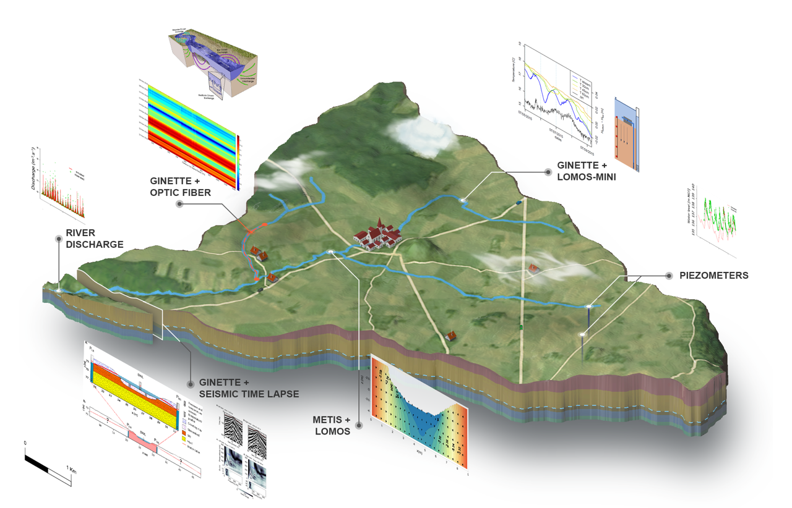
                <h3> Avenelle Station  </h3>
                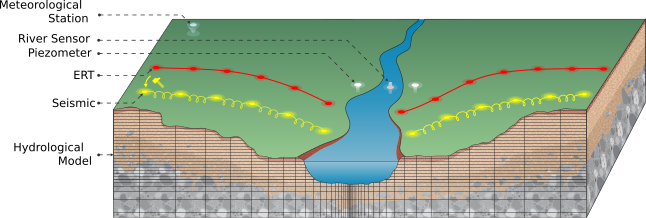
                <h3> Field trip </h3>
                <h4> Seismic Campaign</h4>
                <div class="vidfullframe">
                    <video controls="nocontrols" autoplay loop muted name="Agnes Riviere on Orgeval Field Video, 2017">
                        <source src="img/TL3.mp4" type="video/mp4">
                        Your browser does not support the video tag.
                    </video>
                </div>
                <video controls="controls" width="800" height="600" name="Field Video">
                    <source src="img/figures/fied1/IMG_8803.mp4" type="video/mp4">
                    Your browser does not support the video tag.
                </video>

            </section>

            <section id="section7">
                <h2> Service to the community </h2>

                <h3> Scientific Committee Members for Research Program </h3>


                <p><strong>Since 2022</strong>: Responsibilities in the <a href="https://www.ozcar-ri.org/fr/accueil/" > OZCAR </a> Research Infrastructure, i.e. the French network of Critical Zone Observatories</p>
                <p> coPI of Work Package   <a href="https://www.ozcar-ri.org/fr/wp2-interface-modeles-donnees/"> “Data-Model Interface” </a> with Jean Marçais (INRAE, Lyon)</p>
                <p><strong>Since 2020</strong>: Member of the working group 6 "Europe" du <a href="http://www.za-inee.org/">  Réseau des Zones Ateliers (RZA) </a></p>
                <p><strong>Since 2020</strong> : Scientific animation of the Orgeval Observatory (<a href="https://gisoracle.inrae.fr/">ORACLE </a>, <a href="http://ecceterra.sorbonne-universite.fr/fr/index.html">OSU Ecce Terra</a>) with Hocine Henine (INRAE, Antony). This observatory is candidate to become <a href="https://elter-projects.org/">eLTER </a>(EuropeanLong-Term Ecosystem, critical zone and socio-ecological Research site). </p>
                <p><strong>Since 2019: </strong> Scientific committee of <a href="https://rgf.brgm.fr/" > RGF</a> </p>
                <p><strong>Since 2014:</strong> Member of the Executive Committee of the <a href="https://www.piren-seine.fr/" >PIREN-Seine </a> program (Zone atelier Seine) </p>
                <ul>
                    <li>	<strong>2025-2029 : </strong>animation of axis 5 Phase 9 “Biogeochemical and thermal flows along the Human-Earth-Seas continuum under socio-climate changes” of phase 9 of the PIREN-Seine (Sene Workshop Zone) with Vincent Thieu (SU, Paris) and Edith Parlenti (EPOC, Bordeaux)</li>
                    <li>	<strong>2019-2024: </strong>animation of <a href="https://www.piren-seine.fr/piren_seine/phase_8_du_programme">  axis 2 Phase 8 </a> Phase 8 “Climatic extrem” with Vincent Thieu (SU, Paris) </li>
                    <li>	<strong>2015-2019: </strong>animation of <a href="https://www.piren-seine.fr/publications/fiches_4_pages/le_piren_seine_lance_sa_phase_vii"> axis 2 Phase 7 </a> “Functioning of the hydro-ecological corridors of the Seine basin for the evaluation of amenities and restorations” with Alexandre Gelabert ( IPGP, Paris)</li>
                </ul>

                <p><strong>2014-2019</strong> : Member of <a href="https://wiki.lsce.ipsl.fr/interfrost/doku.php" >Interfrost Intercomparison project</a> for thermo-hydro coupled heat and water transfers in permafrost regions
                    ). Coordination Christophe Grenier, LSCE.</p>

                <h3> Scientific Committee Members for conference </h3>
                <p><strong>2024</strong> : Scientific Committee of 'Journées de Modélisation des Surfaces Continentales' <a href="https://jmsc2024.sciencesconf.org/"> ⟨jmsc2024⟩ </a>, 19-20 june, Strasbourg (France) </p>
                <p><strong>2023</strong> : Scientific Committee of GEOFCAN <a href="https://cnrs.hal.science/METIS_UMR7619/hal-04382208v1" >⟨geofscan2023⟩</a> , 7-8 november, Strasbourg (France) </p>
                <p><strong>2022</strong> : Scientific Committee of 'Colloque sur les enjeux écologiques et sociétaux des hydrosystèmes : 20 ans de recherche dans le bassin de la Loire'
                     <a href="https://20anszal2022.sciencesconf.org/resource/page/id/1"> ⟨ZA_loire⟩  </a>, 4-5 oct. 2022 Orléans (France)  </p>
                <p><strong>2022</strong> : Scientific Committee of 'Journées de Modélisation des Surfaces Continentales'  <a href="https://jmsc2022.sciencesconf.org/">⟨jmsc2022⟩, 6-7 october, Grenoble (France) </a></p>
                <p><strong>2019</strong> : Scientific Committee of GEOFCAN <a href="https://www.geosoc.fr/liens-docman/telechargements-articles-agenda-actualites/1445-plaquette-geofcan2020-avril-2020/file.html"> ⟨geofscan2020⟩  </a>, 24 -25 november, Grenoble (France) </p>
                <p><strong>2019</strong> : Scientific Committee of Journées de Modélisation des Surfaces Continentales <a href="https://www.metis.upmc.fr/fr/node/615"> ⟨jmsc2019⟩, Paris (France) </a></p>
                <p><strong>2018</strong> : Scientific Committee of GEOFCAN (approche GEOphysique et structurale de l’organisation spatiale et du Fonctionnement des Couvertures pédologiques Anthropisés et Naturelles), 20-21 november, Antony (France) </p>
            </section>

                <section id="section8">
                    <h2> Supervision </h2>
                    <h3>Post Doc researchers</h3>
                    <p><strong> 2023-2024 : </strong> Antoine Morvan – Modelling of marine dunes : local and large-scale evolutions in an OWF context (MODULLES, France Énergies Marines).   – Co-supervisor with Antoine Maison (France Energie Marine, Brest France) </p>
                    <p><strong>2019-2020 :</strong>	Aurélien Bordet – COntinuité écologique de la Seine et intérêt des ACteurs pour sa Restauration (CONSACRE).– Co-supervisor with Nicolas Flipo (Mines Paris - PSL) and Céline Le Pichon (INRAE, Anthony) </p>
                    <p><strong> 2018-2019 :</strong>	Jonathan Schuite – Rôle des caractéristiques physiques des aquifères dans la déformation du signal climatique enregistré dans les fluctuations piézométriques des aquifères dans le bassin de Paris. Founding: Agence de l’eau.– Co-supervisor with Nicolas Flipo (Mines Paris - PSL) and Nicolas Massei (M2C Rouen, France) </p>
                    <p><strong> 2017-2018: </strong>	Pierre Seraphin – CYcle tRAnsport ENergie EAU. Founding PSL ingénieurie. – Co-supervisor with Nicolas Flipo (Mines Paris - PSL) </p>
                    <h3> Doctoral researchers (PhD candidates) </h3>
                    <p><strong> 2022-2025: </strong>José Cunha Teixeira, Exploitation du monitoring sismique du sous-sol en milieu ferroviaire. Founding SNCF, CIFRE PhD – Co-supervisor with Ludovic Bodet et Alexandrine Gesret + SNCF. </p>
                    <p><strong> 2021-2024: </strong>Ramon Sanchez Probabilistic approach in hydrogeophysics to better articulate geophysical data with hydrogeological models – Founding Mines Paris - PSL – Co-supervisor with Ludovic Bodet et Alexandrine Gesret. </p>
                    <p><strong> 2018-2021: </strong>Deniz Killiç – Modelling of water and energy fluxes in the Seine basin . Founding MINES ParisTech – Co-supervisor with Nicolas Flipo et Patrick Goblet. </p>
                    <p><strong> 2016- 2019: </strong>Mathias Maillot – Etude du risque d’inondation induite par les écoulements de nappes sur Paris et la petite couronne – Encadrement déclaré : 25%. Financement CIFRE EPTB-Seine Grands Lacs / MINES ParisTech  – Co-supervisor with Nicolas Flipo, Patrick Goblet (Mines Paris - PSL) , Françoise Dubreucq and Marc Vincent.</p>
                    <p><strong>2015-2018: </strong> Marine Dangeard – Développement et utilisation d'une approche time-lapse des méthodes sismiques pour l'hydrogéophysique : compréhension de la dynamique des hydrosystèmes et apport à la modélisation hydrodynamique – Co-supervisor with  Ludovic Bodet et Roger Guérin (Sorbonne University, Paris, France) </p>
                    <p><strong>2015-2018: </strong>Karina Cucchi – Stochastic modeling of water exchanges in the stream-aquifer continuum . Financement UC Berkeley, Chateaubriand Fellowship. – Co-supervisor with  Yoram Rubin (Berkeley University), Nicolas Flipo (Mines Paris - PSL) . </p>
                    <p><strong>2014-2018: </strong>Asma Berrhouma – Modélisation du transfert de chaleur dans les hydrosystèmes continentaux comme support de la transformation des pollutions diffuses. – Founding MINES ParisTech  –  Co-supervisor with Nicolas Flipo et Patrick Goblet (Mines Paris - PSL)  </p>


                    <h3>Master Students</h3>
                    <p><strong>2024: </strong>  Thomas  Pauze –   Vers une modélisation distribuée du manteau neigeux sous forêt sur le massif de la Chartreuse (Alpes, France),  co-supervisor with Isabelle Gouttevin and Yves Lejeune (Centre National de Recherche Météorologique (CNRM)/Centre d’Études de la Neige (CEN)) </p>
                    <p><strong>2024: </strong> Samuel Larance  –  REgime THErmique des COurs d’eau : modélisation MECAniste de scénarios appuyée par des mesures de TERrain,  co-supervisor with Paul Bois (ENGESS, Strasbourg, France) </p>
                    <p><strong>2020: </strong>Guillaume SCHULER – Modélisation des échanges nappe-rivière d’eau et de chaleur à partir des données de la fibre optique le long d’un kilomètre du réseau hydrographique des Avenelles. Soutenu par CRITEX. ENGEES (Strasbourg). </p>
                    <p><strong>2020:</strong>Maeva Rancurel, Titouan Harrouet, – Suivi du changement climatique grâce à des mesures haute fréquence sur un petit bassin versant : L'orgeval . 5th year at Polytech' Sorbonne Engineering school (Paris)</p>
                    <p><strong>2018: </strong>Deniz Kilic – Spatialisation des échanges nappe-rivière d’eau et d’énergie à l’aide de la fibre optique le long d’un kilomètre du réseau hydrographique des Avenelles. Stage financé par le PIREN-Seine, soutenu par CRITEX. Master 2 Hydrogéologie et transferts associés, Université de Poitier (Poitier).  co-supervisor with : Olivier Bour (Geosciences Rennes, France) </p>
                    <p><strong>2016: </strong>Solenne Schneider – Geophysical interpolation of hydrodynamic properties in the vadose zone, M2 STPE, Université de Rennes 1. Stage financé par le PIREN-Seine, soutenu par CRITEX.  co-supervisor with Ludovic Bodet and Marine Dangeard (Metis, Sorbonne University, Paris) </p>
                    <p><strong>2016: </strong>Iker Lazcano Bilbao – Détermination de la courbe de gel du sable de Nemours : interprétation de mesures du contenu en eau liquide d'un sol gelé obtenues par TDR, Master 2, Université Pierre et Marie Curie (Paris VI). Stage financé par la FIRE.  co-supervisor with Fayçal Réjiba et Anne Jost (Metis, Sorbonne University, Paris) </p>
                    <p><strong>2016: </strong>Arthur Rambert – Création d’un code de simulation de transport de chaleur et de solutés en 1D, Ecole Polytechnique Universitaire, Université Pierre et Marie Curie (Paris VI).   co-supervisor with Nicolas Flipo (Mines Paris - PSL)  </p>
                    <p><strong>2015: </strong>Mathias Maillot – Caractérisation des hétérogénéités et impact sur les circulations hyporhéiques dans un système fluviatile : du modèle sédimentaire au modèle hydrogéologique. Master 2 Hydrologie Hydrogéologie, Université Pierre et Marie Curie (Paris VI).   co-supervisor with Pierre Weil (M2C Caen, France) </p>
                    <p><strong>2014: </strong>Edmée Cuisinier – Quantification des échanges nappe rivière depuis l'échelle du tronçon jusqu'à l'échelle régionale - stage de fin d’étude Polytechnique –  co-supervisor with Nicolas Flipo (Mines Paris - PSL) </p>
                    <p><strong>2012: </strong>Audrey Lespinasse – Simulation des écoulements dans la zone non saturée : validation avec des solutions analytiques. Master  level, Polytech' Sorbonne Engineering school, Sorbonne University, Paris (France) (Paris VI).</p>
                    <p><strong>2011: </strong>Marion Meigneux – Modélisation 2D de l’écoulement et du transport de chaleur dans le bassin de Paris : étude de l’impact du pergélisol au cours du dernier cycle climatique. Master 2 EGID, Université Michel de Montaigne, (Bordeaux III).   co-supervisor with Anne Jost (Metis, Sorbonne University, Paris) et Julio Gonçalvès (Cerege, Aix en Provence, France). </p>
                    <p><strong>2010: </strong>Cheikhna Aliou Koita – Modélisation de l'échange nappe-rivière : validation expérimentale de modèles numériques. Master 2 Ingénierie de Réservoir, Université de Pau.   co-supervisor with Anne Jost (Metis, Sorbonne University, Paris). Collaboration Schlumberger Water Services, Sandra Jenni.</p>

                    <h3>Bachelor Students</h3>
                    <p><strong>2020: </strong> Camille Schmitt – Building and calibration low cost sensor to monitor stream-aquifer exchanges. second year of the ECE PARIS engineering school (Paris). </p>
                    <p><strong>2011: </strong>Sarah Dantec-Nedelec – Estimation de paramètres hydrodynamiques d’un sable de Nemours non saturé. Licence 3, UPMC (Paris VI). </p>
                    <p><strong>2009: </strong>Barbara Themereau, Arthur Legentil et Lowen Moritz (2010) – Comment circule un fluide dans un aquifère ? Mesures en laboratoire sur maquette. Licence 1, module Géosciences, Ressources, Environnement, UPMC (Paris VI). </p>

                    <h2>Examiner in PhD committee</h2>
                    <p><strong>2023: :</strong> <a href="https://publication-theses.unistra.fr/public/theses_doctorat/2022/Chaguer_Mouna_2022_ED413.pdf">  Mouna Chaguer </a> - Développement du modèle hydrologique intégré NIHM : implémentation des processus de transport. Directed by Frédérick Delay and Sylvain Weill,  Institut Terre Environnement (Strasbourg, France) </p>
                    <h2> Member of PhD monitoring committee (CSI ) </h2>
                    <p><strong>2022-2025:</strong> <a href=""> Clémence Daigre </a> – Impact de la fonte des glaciers tempérés sur la dynamique des aquifères, à travers le cas du Sud-Est de l'Islande. ENS Ulm, PSL University (Paris, France)</p>
                    <p><strong>2022-2025: </strong> <a href="https://ciprhes.hub.inrae.fr/portraits-ciprhes/shu-chen-hsu-inrae"> Shu-Chen HS </a> – Multi-criteria approaches to ensure the spatio-temporal consistency of water fluxes within a semi-distributed hydrological model. INRAE (Anthony, France) </p>
                    <p><strong> 2021-2024:</strong> <a href=""> Rose-nelly Ogandaga capito </a> –Influence de la morphologie de la zone de socle altéré sous couverture sur la convection et les anomalies de température dans la zone centrale du graben du Rhin. Conséquences potentielles sur la distribution des teneurs en Lithium. Mines Paris - PSL (Fontainebleau, France) </p>
                    <p><strong> 2018-2022:</strong> <a href="https://www.theses.fr/268450439"> Jérôme Texier </a> – Caractérisation des échanges nappe-Rhône et des capacités d'autoépuration des berges : application au site de la Jouve (Sorgues). Cerge (Aix-Marseille University, France)  </p>
                    <p><strong> 2019-2023:</strong> <a href="https://agenda.univ-rennes.fr/events/dynamique-des-interactions-physico-chimiques-en-zone-hyporheique-influence-des-crues-et-de-la-suppression-des-barrages"> Mouhamadoul Moustapha Ba </a> –Dynamique des interactions physico-chimiques en zone hyporhéique : Influence des crues et de la suppression des barrages. Geosciences Rennes (France)   </p>
                    <p><strong> 2016-2019:</strong> <a href="https://www.theses.fr/2019SORUS476"> Marine Dangeard </a> –  Développement d'une approche « time-lapse » des méthodes sismiques pour l'hydrogéophysique et la compréhension de la dynamique des hydrosystèmes. Sorbonne University (Paris, France)</p>                      <p><strong>2016-2019:</strong> <a href="https://www.theses.fr/249899426"> Cécile Finco </a> – Étude de l’impact simultané des propriétés électriques, diélectriques et magnétiques du sous-sol sur la mesure géophysique par méthode électromagnétique inductive dans le domaine temporel (TDEM). Sorbonne University (Paris, France)</p>
                </section>
                    <section id="section9">
                        <h2> Teaching experiences </h2>
                      <p>  From 2008 to present, I have been lecturing around 124 hours per year without accounting for the coordination and responsibility time of the modules
                          (cf. figure below) within different engineering school (<a href="https://www.minesparis.psl.eu/"> Mines Paris</a>, <a href="https://www.polytech.sorbonne-universite.fr/"> Polytech' Sorbonne Engineering school </a>) and university (<a href="https://www.sorbonne-universite.fr/">  Sorbonne University </a>, <a href="https://psl.eu/"> PSL (Paris Sciences & Lettres) University) </a>  </p>

                        <div class="figure_center">
                        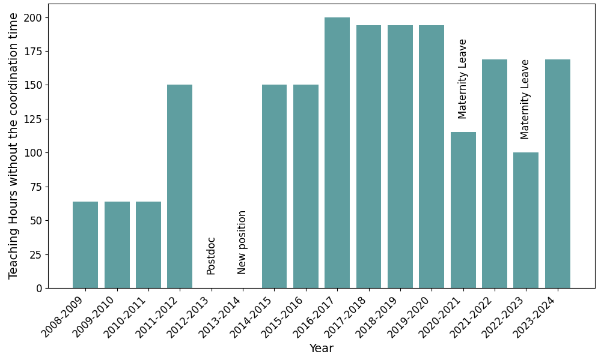
                            <p>Figure: Hours of Teaching Per Year without the coordination time</p>
                        </div>


                        <h3> Current Position (2014-Present):</h3>

                                <h4>Master 2</h4>

                                    <p><strong>2020-Present: </strong>Basics in hydrogeology and hydrogeophysics applications, Option Geosciences, <a href="https://admissibles.minesparis.psl.eu/index.php/structure-de-la-troisieme-annee/">  3rd year </a> at the Ecole des Mines de Paris, Mines Paris PSL (Lectures + Tutorial: 9 hours)</p>
                                    <p><strong> 2020-Present: </strong> Hydrogeological modeling, <a href="https://www.geosciences.ens.fr/enseignement/master/modelisation-numerique-des-ressources-en-eau">  Master 2 Geosciences </a>,  ENS - PSL, Paris (Lectures + Tutorial: 30 hours) </p>
                                    <p><strong> 2014-Present: </strong> Module leader for quantitative hydrogeology in the 5th year at Polytech' Sorbonne Engineering school, Sorbonne University, Paris (France) (Lectures+Tutorial: 48 hours)</p>

                                <h4>Master 1 </h4>

                                    <p><strong>   2023-Present: </strong> Hydrogeology Quantitative, <a href="https://www.geosciences.ens.fr/enseignement/master/ressource-eau"> Master 1 Geoscience </a>, ENS - PSL Paris (4 hours ) <p>
                                    <p><strong>     2020-Present: </strong>  Numerical modeling in geosciences, 4th year at Polytech' Sorbonne Engineering school, Sorbonne University, Paris (France)  (Lectures + Tutorial: 15 hours)</p>


                        <h3> OZCAR Summer School(2014-Present):</h3>
                        <p>The 3rd edition of the OZCAR summer school took place from 1 to 7 July in Aubure, a small Alsatian village home where the OHGE observatory (Observatoire Hydro-Géochimique de l’Environnement) is located, in the lush green setting of the Vosges forest at the foot of the Strengbach watershed. </p>
                        <p>I and Sylvain Weill presented the themes and methodologies of hydrology and hydrogeology.
                            The presentation enabled to remind the processes that make up the water cycle. This cycle differs greatly from one environment to another, and it was an opportunity to discuss on percolation, water residence times and different saturation profiles,
                            all factors that have to be taken into account when modelling the hydrological system of a catchment.</p>
                         <p>You can find the presentations of this 3rd OZCAR summer school on the <a href="https://www.youtube.com/watch?v=Tv7GYHPG9Ao"> OZCAR YouTube channel</a> </p>

                    </section>

                <section id="section10">
                    <h2>  Dissemination to broader audience</h2>
                    <div class="trioimgalery">
                        <a href="img/Dissemination/Orgeval_0780.jpg">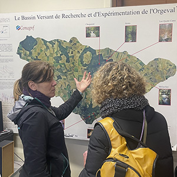</a>
                        <a href="img/Dissemination/Orgeval_0830.jpg">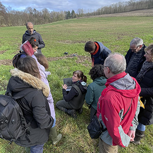</a>
                        <a href="img/Dissemination/Orgeval_0835.jpg">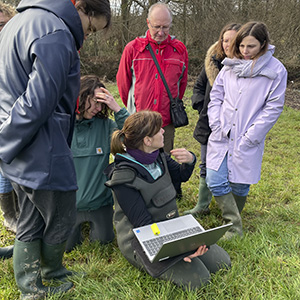</a>
                    </div>
        
                    <h3>2024: Zone sensible -> Les mystères des aquifères</h3>

                 <p>   Après une rencontre lors de la sortie du livre de Jérôme Gaillardert, La terre habitable, j'ai rencontré les membres du <a href="https://lapoudrerietheatre.fr/la-poudrerie">théâtre
                     de la Poudrerie</a> ainsi que la  <a href="https://s-composition.eu/">compagnie S-Composition</a> (dirigée par Jean-Pierre Seyvos et Chloé Latour).
                    Cette rencontre s’est soldée par l'organisation d'une sortie de terrain sur le bassin de l'Orgeval où je leur ai présenté les mystères des aquifères grâce à une presentation suivi d'une visite de terrain.
                    Cette visite entre dans le cadre du projet  <a href="https://lapoudrerietheatre.fr/projets-transversaux-et-grands-formats/s-composition/">  Zone sensible</a>, projet commun entre la compagnie S-Composition et le théâtre de la Poudrerie,
                     est un espace de création de chansons et de formes vocales originales conçu par
                    Jean-Pierre Seyvos (composition, voix, écriture), Chloé Latour (voix, dramaturgie) et Olivier Duperron
                    (créateur sonore, saxophoniste). Le projet a pour vocation d’accueillir des personnes, jeunes ou
                     adultes de différents horizons pour un travail musical collectif proposant une nouvelle sensibilité aux questions écologiques. </p>


                    <h3>2024 :Muséographe à Universcience (Cité des science et de l’industrie / Palais de la découverte) - Agnès Chounet</h3>
                   <p>In the context of the renovation of the Palais de la Découverte (Universcience), islands will showcase geosciences to the general public.
                       The core of the Orgeval drilling will be presented to show how the sediments record the climate change and the marine transgression. In addition, the functioning of the aquifer will be presented thank to an experimental design. </p>
                    <h3>2018 : Presentation of the research results to residents of the Orgeval basin</h3>
                    <p>Co-animators: Jean Marie Mouchel (Sorbonne University), Josette Garnier (Sorbonne University), and Gaelle Tallec (INRAE, Anthony) </p></p>
                    <p>How do groundwater systems function below your feet? </p>
                    <h3>2008-2011:Science Festival</h3>
                    <p>Experimental model illustrating the functioning the groundwaters and model of a wastewater treatment plant. Pierre and Marie Curie University (Paris VI)</p>

                </section>


            <section id="section11">
                <h2>CV </h2>
                    <h3> Main professional experiences </h3>

                            <p><strong>2017-present: </strong>  Associate professor at Geosciences and Geoengineering Department (a research center common to Mines Paris and ARMINES), PSL University, (Fontainebleau, France) </p>
                            <p><strong>2014-2017: </strong>  Tenure-Track at Geosciences and Geoengineering Department (a research center common to Mines Paris and ARMINES), PSL University, (Fontainebleau, France) </p>
                            <p><strong>2013:2014:</strong>  Postdoc at Department of Earth, Energy, and Environment, University of Calgary (Calgary, Alberta, Canada), Title: Influence of  heat transfer on permafrost thaw, on permafrost and groundwater flow at Scotty Creek, NWT, Canada, 1 year, Supervised by Pr. Masaky Hayashi. </p>
                            <p><strong>2011-2012: </strong>  Temporary research and teaching assistant (ATER) at the UMR 7619 Sisyphe, Université Pierre et Marie Curie, (Paris VI) - now Métis, Sorbonne Université, Paris, France </p>
                            <p><strong>2008-2011: </strong>  PhD. thesis</p>
                            <p><strong>2008: </strong>  Master thesis in hydrogeology, at Arkema France and at the UMR 7619 Sisyphe, Université Pierre et Marie Curie, (Paris VI) - now Métis, Sorbonne Université, Paris, France, Title: "Modélisation du transport et de la biodégradation des solvants chlorés dans un aquifère alluvionnaire impacté par des émanations industrielles.", 6 months, Supervised by Dr. Hocine Benjoudi, Pr. Ghislain De Marsily and Dr. Christelle Courbet. </p>
                            <p><strong> 2007:  </strong>  Engineering internship in hydrogeology at Bundesanstalt für Geowissenschaften und Rohstoffe (BGR), Hanover, Germany, Title: "Investigation of the palaeohydrogeology of the Cuvelai Basin by recours of remote sensing and literature compilation.", 5 months, Supervised by Pr. Thomas Himmelsbach. </p>
                            <p><strong> 2005: </strong>  Engineering internship in Envrironment at Le Foll TP (Building and Public Works),Corneville-sur-Risle, France, Environmental policy consultant, 4 months,Supervised by Pierre Gil (Le Foll BTP) </p>
                            <p><strong>2004:  </strong>  Engineering internship in Envrironment at Groupement chaussée Autoroute A28 (Building and Public Works),Caorches-Saint-Nicolas, France, Implementation of environmental control plans on a highway construction site, 2 months, Supervised by Pierre Certain (Le Foll BTP) </p>


                    <h3> Education </h3>

                            <p><strong>2012: </strong> PhD in Quantitative Hydrogeology, UMR 7619 Sisyphe, Université Pierre et Marie Curie, (Paris VI) - now Métis, Sorbonne Université, Paris, France, Doctoral School:  Geosciences, natural resources  & Environment (ED 398), Paris, France.</p>

                            <p><strong>2008: </strong> MSc in Hydrology and Hydrogeology, University of Pierre and Marie Curie, Paris, France.</p>

                            <p><strong>2007: </strong>Master 1 of Engineering Geology Applied to the Environment, Institute of Environment Geo-Engineering & Development (EGID), Bordeaux, France.</p>

                            <p><strong>2005:</strong> Technical degree in Environmental Engineering, Institute of Technology (IUT GE), University of Caen, France.</p>


            </section>
            <section id="contacts">
                <h2>Contacts</h2>
                Contact me at <a href="mailto:mail@aexample.com">agnes.riviere@minesparis.psl.eu</a>
            </section>
            <footer>
                <p>Vanilla HTML website</p>
                <div class="figure_center">
                    
                </div>
            </footer>
        </div>
    </div>

</body></html>
